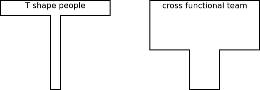
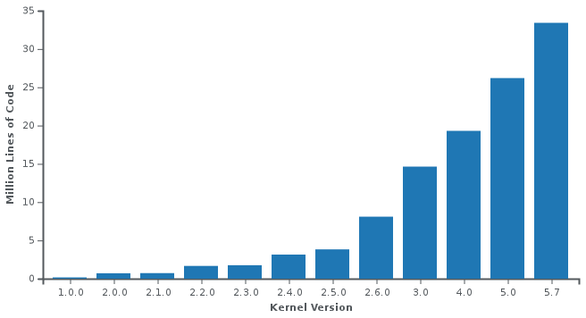
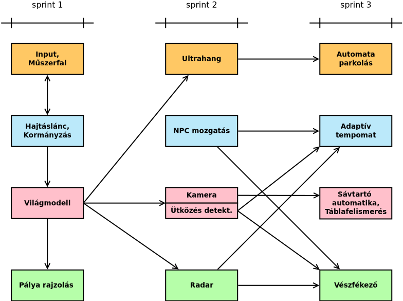
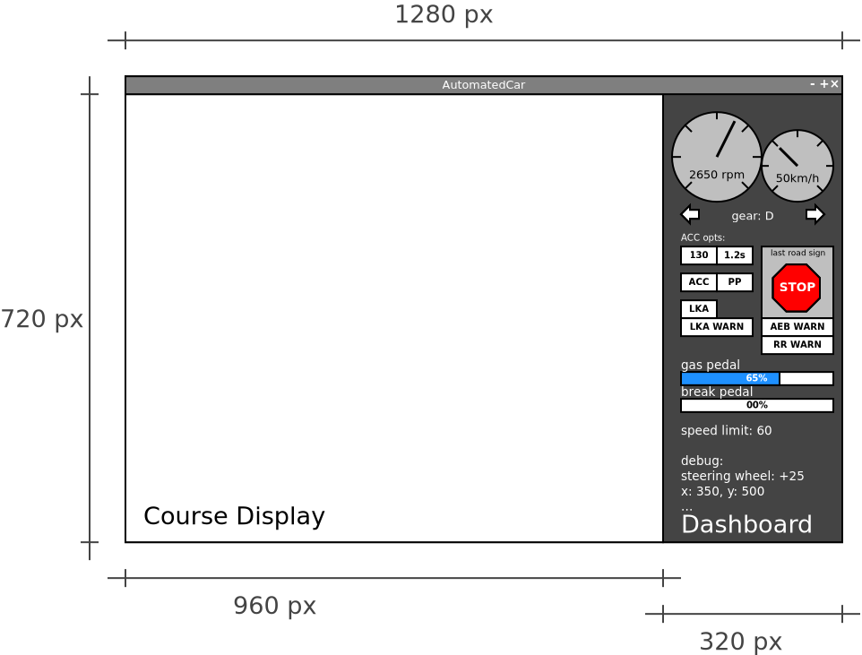
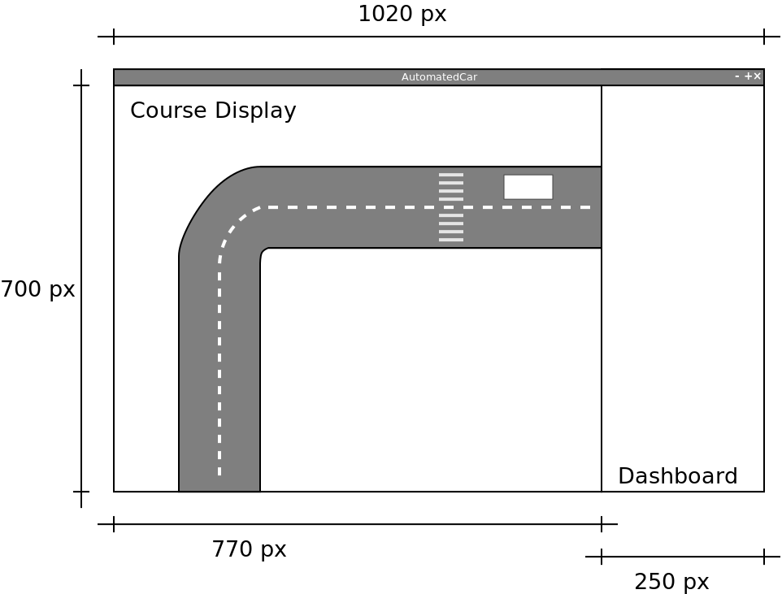
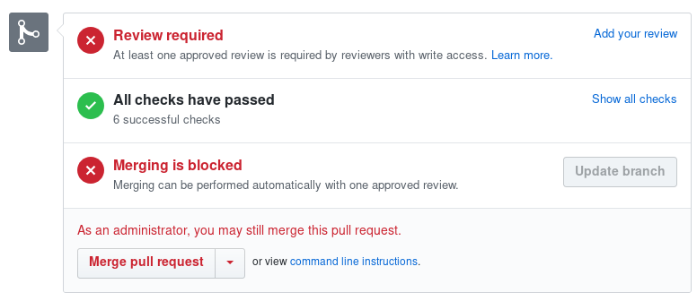
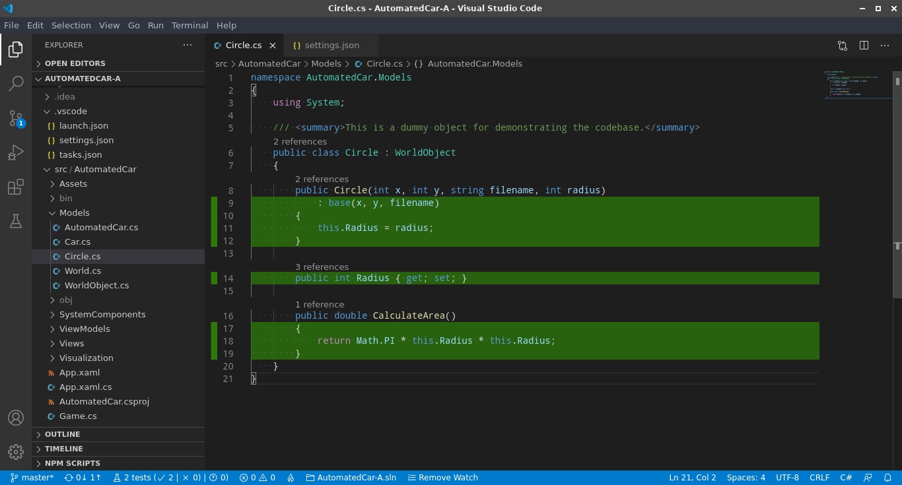

Szoftverfejlesztés multinacionális vállalatoknál
A tárgy keretében a hallgatók lehetőséget kapnak megtapasztalni egy multinacionális környezetben történő szoftverfejlesztés mikéntjét és kihívásait. A félév során a hallgatók egy, vezetéstámogató rendszerek működésének demonstrációjára szolgáló játék fejlesztésén keresztül megismerhetik a Scrum Agile metodológiát, kipróbálhatják a Test Driven Developmentet, elsajátíthatják a Clean Code írásának alapelveit, tapasztalatot szerezhetnek a jó Code Review végzésében, továbbá elméleti ismeretet szereznek a Software Craftsmanshipről, Agile-ról általában, a Continuous Integration-ről.
A tárgy kettős felépítésű - minden alkalommal elméleti előadáson mutat be egy új ismeretanyagot, amit aztán a hallgatók a gyakorlatba ültethetnek a saját csapatukon belül. A félév során kis létszámú (4-7 fős) csapatokra bontva három sprintet kell teljesíteni, minden sprintben működő szoftvert szállítani, amit a hallgatók terveznek, implementálnak (Java nyelven, Git és IntelliJ IDEA segítségével), integrálnak és verifikálnak majd csapatonként mutatják be saját kontribúciójukat. Ez teljes féléves órán kívüli elköteleződést és felelősség vállalást kíván a csapat sikere iránt - az értékelés jelentős részét a gyakorlati munka adja.
A tantárgy célja, hogy a hallgatók olyan tapasztalatot szerezzenek, amely egy tipikus multinacionális környezetben előfordul: párhuzamos és komponens alapú szoftverfejlesztés, megrendelő fókusz, határidős fejlesztések, proaktivitás, kommunikációs és (ön)szervező készség, függőségek és blokkoló tényezők feloldása, megoldása.
Mottó
A designer knows he has achieved perfection not when there is nothing left to add, but when there is nothing left to take away.
Ütemezés
Az órák csütörtökönként a BA.F.07-ben vannak (online, MS Teams-en), neptun szerint 08:00-10:35 között előadás és 10:45-11:30 között gyakorlat. (Ezek aránya valamint közte a szünet az aktuális előadásanyag és az igények szerint módosulhat). A „gyakorlat” nem labor, hanem sokkal inkább konzultáció!
| hét | dátum | előadás | gyakorlat |
|---|---|---|---|
| 1. | 09. 10. | Bevezető, áttekintés, aSpice alapok | csapatsorsolás, első feladat kiadás, Sprint Planning, Task Definition Workshop, Team commitment, Scheduling |
| 2. | 09. 17. | Agile, SCRUM, Kanban | git, GitHub, IDEA ismertetés |
| 3. | 09. 24. | Napi munka, verziókezelők | Branch review, status review, standup (did, will, blocking) |
| 4. | 10. 01. | TDD, Unit Testing | TDD kata |
| 5. | 10. 08. | első demo, retrospektív | második feladat kiadás, Sprint planning, Task Definition Workshop, Team commitment, Scheduling |
| 6. | 10. 15. | Legacy Code, SOLID | Refactoring gyakorlat egy előre előkészített példán |
| 7. | 10. 22. | Review | Random code review egy tetszőleges elfogadott pull requestből |
| 8. | 10. 29. | Continous Integration | Set up a CI script running all implemented unit tests |
| 9. | 11. 05. | második demo, retrospektív | harmadik feladat kiadás, Sprint planning, Task Definition Workshop, Team commitment, Scheduling |
| 10. | 11. 12. | Software Architecture | |
| 11. | 11. 19. | Konzultáció | |
| 12. | 11. 26. | Összefoglalás, konzultáció | |
| 13. | 12. 03. | harmadik demo, retrospektív, tárgy feedback | Pair programming, Coding Dojo |
| 14. | 12. 10. | Zárthelyi dolgozat 08:00-tól 09:30-ig (90 perc), 1.?? és 1.?? laborok |
Gantt diagram
Demók
A félév során a csapatok három alkalommal prezentálják az elvégzett munkát. A „demók” az elkészült szoftver megrendelőnek való bemutatását szimulálják. Nem a kódra vagyunk kíváncsiak, hanem működés közben szeretnénk látni, hogy a szoftver teljesíti feladatban foglalt követelményeket.
A bemutatás során, a master branchre befogadott kódot vesszük figyelembe, minden egyéb „nem készült el határidőre”, azaz értékelhetetlen.
Zárthelyi
Ismert, Moodle-ös teszt, 50 kérdéssel, erre 90 perc áll majd a rendelkezésre. Minden kérdéshez 4 válaszlehetőség, amelyek közül pontosan egy a helyes. (Vannak „az alábbiak közül melyik NEM helyes” felépítésű kérdések is.) A rendelkezésre álló idő alatt kérdéseket tetszőleges alkalommal felül lehet vizsgálni, módosítani a teszt „lezárása” után azonnal kiértékelésre is kerül.
Felkészülést segítő anyagaok
Ajánlott irodalom
- The Software Craftsman: Professionalism, Pragmatism, Pride – Robert C. Martin
- The Clean Coder: A Code of Conduct for Professional Programmers – Robert C. Martin
- Clean Code: A Handbook of Agile Software Craftsmanship – Robert C. Martin
- Working Effectively with Legacy Code - Michael Feathers
- TDD by Example – Kent Beck
- XP Explained – Kent Beck
Online anyagok fejezetenként
- Agile, SCRUM, Kanban
- Daily Work, Clean Code, Version Control
- TDD, Unit Testing
- Legacy Code, SOLID
- Review
- Continuous Integration
- Software Architecture
Javasolt (fel)készülési módszer
Mivel a diákat nem adjuk ki, célszerű jegyzetelni: címszavakat, fogalmakat leírni, gondolatmenetet rögzíteni (bár ehhez is kaptok kész anyagot az alábbi mindmap tekintetében). Nem a diát kell lekörmölni (annak ellenére sem, hogy azokat nem kaphatjátok meg), annak nincs értelme! Óra után (az óra hetében), ezekre rákeresni (pl. Google), valamint elolvasni az itteni anyagokat. A hivatkozott linkek mögötti tartalom olyan anyagmennyiséget jelent, amelyet a ZH előtti estén nem lehet feldolgozni.
Mindmap
A témakörök „mindmap” formájú összefoglalása letölthető itt, megnyitáshoz a Freemind nevű javás eszköz szükséges. Vagy közvetlenül innen megnyitható a HTML-re fordított változata.
Címszavak
Címszavak (különösebb sorrend nélkül) amelyek az elméleti anyagot több-kevésbé lefedik. Ha valakinek ezeket a fogalmakat nem tudja kifejteni (nem tiszta mit jelent), akkor célszerű megkérdezni a Googlet vagy a Wikit. ;)
agile, agile manifesto, software craftmanship, SCRUM, user story, backlog (product backlog vs. sprint backlog; ki szerkeszti?), task (hossza, elemei), sprint (hossza), sprint review, sprint planning, burndown chart, scrum of scrums, business value, story point, standup (hossza, mikor van, ki vesz rajta részt, 3 kérdés), blocking issue, retro(spective), backlog refinement (aka backlog grooming), demo, daily cycle, clean code, traceability (eszkaláció), version control (elosztott vs. centralizált), refactoring, review (informal, walkthrough, technical, inspection), pair programming, scrum team tagjai: scrum master, product owner, development team, cross functional team, self-organizing team, stakeholder, kanban, scrumban, waterfall, v-model, scrum of scrums (ambassador), Test-driven development, (software) unit, unit testing (arrange, act, assert, annihilate), test suite, test case, quality assurance, coding kata, code golf, legacy code, code smell, rotting code, dependency reduction, seams, Continuous integration, Test automation, Continuous deployment, minimized context switch, DevOps, coding dojo, SOLID priciples, clean code, definition of done, milestone, deadline, mocking (dummy, stub, spy, mock, fake), requirement, requirement engineering, centralized version control, distributed version control, traceability, finding, bug fixing, optimizing, feature envy, KISS, code complexity, cyclomatic complexity, regression test, deployment strategies/shadow deploy, teszt stratégiák (top-down, bottom-up, sandwich, big-bang, risky-hardest), black-box testing, white-box testing, gray-box testing, nightly build, hardware in the loop (HIL), software in the loop (SIL), SMART objectives, technical debt, effort estimation
Agile, SCRUM, Kanban
The Agile Manifesto
We are uncovering better ways of developing software by doing it and helping others do it. Through this work we have come to value:
- Individuals and interactions over processes and tools
- Working software over comprehensive documentation
- Customer collaboration over contract negotiation
- Responding to change over following a plan
That is, while there is value in the items on the right, we value the items on the left more.
-- forrás
- The following 12 Principles are based on the Agile Manifesto.
- Külön érdekes a szoftverfejlesztési metodológiákat metrótérképszerűen összefoglaló ábra
Waterfall Vs. Agile

- Waterfall Vs. Agile: Must Know Differences
- A többi fejezet is ajánlott
- Waterfall vs. Agile: Which is the Right Development Methodology for Your Project?
V-Model

Manifesto for Software Craftsmanship
As aspiring Software Craftsmen we are raising the bar of professional software development by practicing it and helping others learn the craft. Through this work we have come to value:
- Not only working software,
- but also well-crafted software
- Not only responding to change,
- but also steadily adding value
- Not only individuals and interactions,
- but also a community of professionals
- Not only customer collaboration,
- but also productive partnerships
That is, in pursuit of the items on the left we have found the items on the right to be indispensable.
-- forrás
SCRUM

- Scrum Guide
- Ez egy igen kiváló összefoglaló, de a webhely elég tré módon oldotta meg a http/https átirányítást, így minden aloldal megnyitása a főoldalra dob.
- Az aloldalak alján a tartalomjegyzék már jó.
- Az alábbi alfejezetek ajánlottak:
- Ez egy igen kiváló összefoglaló, de a webhely elég tré módon oldotta meg a http/https átirányítást, így minden aloldal megnyitása a főoldalra dob.
- The Scrum Guide
- PDF, 17 oldal
- Scrum in practice: the daily Scrum
- Scrum of Scrums
- How to Succeed at a Sprint Demo
- Scrum Master - Funny movie about The Power of Scrum
Az Egyetem más tárgyhoz fejlesztett e-tananyaga SCRUM-hoz
- Elérhető innen
- Ebből az első két blokk (a „Product owner” és a „Scrum Master”) releváns, mindkettő 5-5 modul, modulonként egy ~50 oldalas prezentációval.
- Teljes más a sztuktúrája mint az SzFMV tárgynak, de kifejezetten hasznos részeket is tartalmaz mint pl. a Product owner / 4. modul: user story szétbontása
- A modulokhoz ellenőrző kérdések is vannak, ezek bár független a ZH kérdéseinkről, de a releváns fejezetek önellenőrzésére jók lehetnek
Cross-functional team

Akkor tud egy csapat „cross-functional” lenni, ha minden tagja kellőképpen érti a csapat feladatát, így a tagok képesek egymást helyettesíteni. A fenti ábra a csapattagok tudását szemlélteti. Az első esetben csupán elenyésző általános tudással rendelkező emberekről van szó, akik egy nagyon szűk területet ismernek. A cross-functional team esetében is megvan az egyes tagok specifikus tudása ám az kevésbé nyúlik túl a csapat általános ismeretein és kevésbé specifikusabb is.
Kanban

- a cetlik (taszkok) balról jobbra haladnak,
- mindig a leginkább jobbra és felül lévővel kell fogllakozni, hogy a lehető leghamarabb be legyen fejezve
- az adott oszlopon belül minél följebb van egy tasz annál magasabb a prioritása
- már eszköz függő, de a cetlin célszerű jelezni, hogy
- ki fogllakozik vele
- milyen nehézségű (időigényű)
- stb.
Scrumban
Daily Work
Communication
- A Remote communication strategies kifejezetten hasznos a GitLab távmunka kézikönyvéből
- 18-26. oldal
I am only responsible for what I said, not for what you understood
Igaz ez? Miért nem?
Számítsd bele, hogy a másik nem ugyanazzokkal az előismeretekkel rendelkezik, nem ugyanazzal a fogalomkészlettel, terminológiával, esetleg anyanyalvvel.
- A Software Developer’s Guide to Project Communication: Part 1
- a 2. rész is ajánlott
- Communication on Agile Software Teams
Requirement Engineering
- Principles of Requirements Engineering
- Egy több részes cikk sorozat a Requirements Engineering-ről:
- Requirements Engineering vs. Business Analysis
- HOW TO SPLIT A USER STORY
- PDF, 1 oldal, flowchart
Coding

A TDD-ről részletesen a TDD fejezetben.
Cserkész szabály
Always leave the campground cleaner than you found it
-- Robert C. Martin (Uncle Bob)
Clean Code
Always code as if the guy who ends up maintaining your code will be a violent psychopath who knows where you live. Code for readability. source
A viccet félretéve az egész lényege az érthetőség és a karbantarthatóság. Két hét múlva is meg kell értened a saját kódod és nem csak neked.
Meaningful Names
Az alábbiak Robert C. Martin Clean Code című könyvénből a 2. fejezet (Meaningful Names) alfejezet címei, az idézetek is onnan valók.
- Use Intention-Revealing Names
-
int d; // elapsed time in days -
int elapsedTimeInDays;
-
- Avoid Disinformation
- Make Meaningful Distinctions
-
It is not sufficient to add number series or noise words, even though the compiler is satisfied. If names must be different, then they should also mean something different.
-
- Use Pronounceable Names
-
If you can’t pronounce it, you can’t discuss it without sounding like an idiot. “Well, over here on the bee cee arr three cee enn tee we have a pee ess zee kyew int, see?”
- Külön szempont ez nem angol anyanelyvűeknél, némely szavakat bonyolultabb kiejtenünk
-
- Use Searchable Names
-
Single-letter names can ONLY be used as local variables inside short methods. The length of a name should correspond to the size of its scope.
-
- Avoid Mental Mapping
-
Readers shouldn’t have to mentally translate your names into other names they already know.
-
clarity is king
-
- Avoid Encodings
- a modern IDE-k esetében már teljesen fölösleges típus vagy szerepjelöléseket tenni a nevekbe
- Pick One Word per Concept
- Don’t Pun or use humor
- Add Meaningful Context
-
Imagine that you have variables named firstName, lastName, street, houseNumber, city, state, and zipcode. Taken together it’s pretty clear that they form an address. But what if you just saw the state variable being used alone in a method?
-
Nincs megjelölve forrás, de ez az összefogleló is ezen a fejezeten alapszik.
Functions
Az alábbiak Robert C. Martin Clean Code című könyvénből a 3. fejezetén alapulnak.
- A hossza legyen a lehető legrövidebb (akár 2-4 sor, bár személy szerint azt néha túlzásnak tartom)
- Do One Thing
- Use Descriptive Names
- egy metódus valamit csinál, tehát kezdődjön igével, pl.
increaseSpeed - a nevéből legyen egyértelmű, hogy mit csinál
-
Robert C. Martin The Inverse Scope Law of Function Names: The longer the scope of a function, the shorter its name should be. Functions that are called locally from a few nearby places should have long descriptive names, and the longest function names should be given to those functions that are called from just one place.
- egy metódus valamit csinál, tehát kezdődjön igével, pl.
- Function Arguments
- Lehetőleg ne használj 3-nál több paramétert
-
Flag arguments are ugly [...] loudly proclaiming that this function does more than one thing.
- Have No Side Effects
-
Wikipédiából: an operation, function or expression is said to have a side effect if it modifies some state variable value(s) outside its local environment, that is to say has an observable effect besides returning a value (the main effect) to the invoker of the operation.
-
Side effects are lies. Your function promises to do one thing, but it also does other hidden things.
-
- Prefer Exceptions to Returning Error Codes
- a korábbiakból már adódik, hogy miért jobb egy FileNotFoundException mint egy ERRCODE_26375
Comments
One of the more common motivations for writing comments is bad code. We write a module and we know it is confusing and disorganized. We know it’s a mess. So we say to ourselves, “Ooh, I’d better comment that!” No! You’d better clean it!
-- Robert C. Martin: Clean Code, pp 55.
- Gyakori a kód strukturálása kommentekkel, ilyenkor célszerű függvényeket használni inkább
- Kerülendő a TODO és a FIXME a kommentekben, ez azt jelenti, hogy nem vagy készen
- Kommentezni ajánlott viszont -szerintem- a domain specifikus részeket, amelyek megértését nem feltétlenül lehet elvárni egy fejlesztőtől. Pl. egy fizikai számítás.
- Továbbá nem haszontalan a dokumentációs kommentezés pl. Javadoc, kivéve ha egy
increaseSpeedmetódus kommentje annyi, hogy "this method increases the speed", sokkal többet mondana az, hogy mennyivel, milyen korlátok között stb. amelyek révén aztán hasznos lesz a generált API dokumentáció anélkül, hogy a kódba kellene nézni.


Verziókezelők

Mi a verziókezelő?
Version control, a.k.a. revision control / source code management, is basically a system for recording and managing changes made to files and folders. It is commonly used to manage source code, however, it is also well suited to tracking changes to any kind of file which contains mostly text.
-- forrás
Az ember hajlamos ad-hoc módon is verziózni a munkáját, pl.1:

Több szolgáltatás és szoftver alapból tartalmaz verziókövetést, pl. a Dropbox, Google Drive, stb. is verziózza a feltöltött állományokat; az MS Word még merge-elni is tudja az egyes verziókat.
Michael Ernst összefoglalója alapján:
- Version control enables multiple people to simultaneously work on a single project. Each person edits his or her own copy of the files and chooses when to share those changes with the rest of the team. Thus, temporary or partial edits by one person do not interfere with another person's work.
- Version control also enables one person you to use multiple computers to work on a project, so it is valuable even if you are working by yourself.
- Version control integrates work done simultaneously by different team members. In most cases, edits to different files or even the same file can be combined without losing any work. In rare cases, when two people make conflicting edits to the same line of a file, then the version control system requests human assistance in deciding what to do.
- Version control gives access to historical versions of your project. This is insurance against computer crashes or data lossage. If you make a mistake, you can roll back to a previous version. You can reproduce and understand a bug report on a past version of your software. You can also undo specific edits without losing all the work that was done in the meanwhile. For any part of a file, you can determine when, why, and by whom it was ever edited.
Mit érdemes verziókezelni
"In practice, everything that has been created manually should be put in version control, including programs, original field observations, and the source files for papers."
-- Best Practices for Scientific Computing; Wilson et al. 2012 (arXiv:1210.0530)
Az ehhez a jegyzethez készített ábrák és azok forrása is verziókezelés alatt van, ezek a .png és .dia állományok a /src/images/ mappában, utóbbiak valójában egy diagramszerkesztő alkalmazás XML alapú forrásfájljai.
- Ez az írás összefoglalja a verziókezelési modelleket (Lock-Modify-Unlock, Copy-Modify-Merge), emez pedig összehasonlítja a centralizált és az elosztott verziókezelőket.
- About Version Control
- a Git könyv első fejezete, rövid összefoglaló
- gyakorlati oldalról lást Git fejezet
http://smutch.github.io/VersionControlTutorial/pages/0-intro.html#what-is-version-control
Centralizált verziókezelő

Elosztott verziókezelő

Branching
Az „A successful Git branching model” című posztban lehet olvasni egy szélesebb körben kedvelt modellről. A félév során használt többé-kevésbé ehhez hasonló.

További írások a témában
- A fork és a branch közötti különbségekről
- a simple git branching model
- OneFlow – a Git branching model and workflow
- Comparing Workflows
- Git branching and forking in the enterprise: why fork?
- Using the Fork-and-Branch Git Workflow
- Stackoverflow / Forking vs. Branching in GitHub
- A succesful Git branching model considered harmful
- Escape from Merge Hell: Why I Prefer Trunk-Based Development Over Feature Branching and GitFlow
Commit üzenetek

A How to Write a Git Commit Message egy hosszabb, példákkal illusztrált írás a jó commit üzenetekről, amely hét szabályban foglalja össze, hogy mire kell figyelni. Ezt egészíteném ki egy nyolcadikkal.
- Separate subject from body with a blank line
- Limit the subject line to 50 characters
- Capitalize the subject line
- Do not end the subject line with a period
- Use the imperative mood in the subject line
- Wrap the body at 72 characters
- ez a legkevésbé fontos
- Use the body to explain what and why vs. how
- Reference the issue!
Miért fontos a 8. pont?
Valójában (bizonyos szempontból) az issue behivatkozása a legfontosabb, méghozzá a visszakövethetőség (traceability) miatt.

Minden módosítás (a verziókövető rendszerben) rendelkezik egy azonosítóval, amelyhez társul, hogy ki és mikor végezte el a módosítást. Valamit egy üzenet, amely -- jó esetben -- leírja, hogy mi volt ez a módosítás. A visszakövethetőség egy adott szintig tehát szerves része a verziókövető rendszereknek.
A módosítások azonban nem csak úgy ötletszerűen történnek, hanem valamilyen feladat által meghatározott célból. Pl. jelenítsd meg a műszerfalon az autó pillanatnyi sebességét (feature), vagy javítsd ki pixel/s -> km/h átváltást, mert kerekítési hiba miatt értelmetlen érték jelenik meg (bugfix).
Ugyanakkor a feladatok (task) sem csak úgy lógnak a levegőben, jellemzően kapcsolódnak egy user story-hoz (különösen a feature-ök), de biztosan kapcsolódnak egy sprinthez (hiszen beütemezték a megoldását valamikorra), van felelősük, határidejük, stb. Úgy általában van véve egy kontextusuk. Az issue (más néven task) tartalmazza az adott feladat pontos részleteit, az issue/task trackerben akár a megoldás teljes vitafolyamata megtalálható. Pl. ki hogyan akarta implementálni, milyen érvek és ellenérvek merültek fel az egyes implementációs lehetőségek mellett/ellen, hogyan jutott a fejlesztőcsapat konszenzusra, vagy ki hagyta jóvá az adott módosítást, ki döntött arról, hogy melyik sprintbe kerüljön be, stb.
A visszakövethetőség nem csak addig a pontig érdekes és fontos, hogy ki írta át a változó típusát (pl.), hanem a teljes tervezési/döntés folyamatig visszamenőleg.
Mi van akkor ha a döntés egy face-to-face meetingen (pl. standup), skype konferenciahíváson vagy egyéb nem írásos formában történt? (A szó elszáll, írás megmarad...)
Ebben az esetben, az issue kiváló hely arra, hogy írásban is rögzítve legyenek az elhangzottak. Pl. YYYY-MM-DD-ei megbeszélés alapján az XY library segítségével fogom implementálni az analóg fordulatszámkijelzőt. Akár explicit írásos jóváhagyást is lehet kérni...
További „iskolák”
- Az AngularJS Git Commit Message Conventions a commit üzenet fejlécét a
<type>(<scope>): <subject>szabály szerint követeli meg.- ahol típus lehet build, ci, docs, feat, fix, perf, refactor, style vagy test
- valójában a 1., 4. és 5. pontot ez is megköveteli; a 3.-al pont szembemegy, aminek oka, hogy a tárgy típusmegjelöléssel kezdődik, nem a tárgy szövegével
- a tárgy és törzs sorhosszára 100 karakteres limitet ad, szemben a fenti hagyományos (akár úgy is lehet érteni, hogy elavult) terminálméretekre szabott korlátaival
- Egy másik, az Angularéhoz nagyon hasonló a Conventional Commits
- Ezek előnye lehet -megfelelő tooling mellett- pl. az automatizált changlelog generálás
- nálunk nincs ilyesmire beállított eszköz
Mire jó még a commit üzenet?
Például arra is alkalmas, hogy lezárjunk vele egy issue-t. Ha a commit üzenet törzse tartalmazza a close, closes, closed, fix, fixes, fixed, resolve, resolves vagy resolved utasítások egyikét, akkor a GH automatikusan zárja az issue-t amint az a fő ágba (master) került. Pl.
Fix px/s -> km/h conversion #28
Fixes #28
Mikor commit-oljunk?
A fentiekből már látszik, hogy az egésznek akkor van értelme, ha egy-egy commit egy jól megválasztott mértékű módosítást rögzít. Az a megközelítés, hogy a munkanap végén nyomok egy commitot valami olyasféle üzenettel, hogy Changes on YYYY-MM-DD nem nagyon szolgálja a visszakövethetőséget.
Egy taszk hossza 1-4 óra (főállású fejlesztőre értelmezve), de fontos, hogy egy megszakítás nélkül elvégezhető feladat legyen. Ez azt jelenti, hogy egy taszk egyenlő egy committal? Nem. Egy taszk megoldása természetesen több commitból is állhat.
A When to make a Git Commit poszt1 alapján (is), azt mondanám, hogy akkor érdemes commitolni, ha:
- Befejeztem egy egységnyi munkát.
- Olyan módosítást végeztem, amit esetleg visszavonnék.
Az egységnyi munka módosított sorok és fájlok tekintetében rendkívül változó lehet. Egy bugfix pl. állhat egyetlen karakter módosításából, de egy refaktorálás során egy metódus átnevezése járhat tucatnyi fájl módosításával (ahol az adott metódus használva volt). Ugyanakkor a metódusátnevezés után biztosan érdemes lehet commitolni, egyéb módosítást már nem csapnék hozzá.
Ha a commit üzenetbe azt írnád, hogy Rename foobar method and fix typo in the comment #42 már biztosan két külön commitra lenne szükséged.
a hozzá tartozó kommenteket is érdemes átfutni
Review
A tárgy során

Test Driven Development
Tesztelés
Az alábbi ábra mutatja a tesztelések eloszlását hagyományos és agilis fejlesztéseknél. Az egész lényege, hogy minél előbb és a fejlesztőhöz a lehető legközelebb derüljön ki a hiba, mert annál gyorsabb és olcsóbb annak javítása. Könnyen belátható, hogy egy leszállított terméket kell visszahívni az körülményesebb mintha a fejlesző a run tests gombra nyomva azonnal, helyben az adott kód részlet írása közben (amikor még az a kontextus van a fejében) kap egy képet arról, hogy mi nem jó. De még midnig jobb ha pl. sprinten belül egy automatizált integrációs teszt fogja meg a hibát, stb.

TDD
- What is Test Driven Development?
- Introduction to Test Driven Development (TDD)
- TDD
- TDD Laws
- Az eredeti egy refaktorált verziója innen:
- Write production code only to make a failing unit test pass.
- Write only enough of a unit test to fail.
- Write only enough production code to make the failing unit test pass.
- Az eredeti egy refaktorált verziója innen:
- TDD wikiről
TDD cycle
As the tests get more specific, the code gets more generic.
-- Uncle Bob
Red
- tesztelj egyszerre egy dolgot
- a teszt legyen nagyon egyszerű
- folyamatosan növeld teszt(esetek) komplexitását
- mockold a függőségeket
Writing Unit Tests
Green
- a lehető legegszerűbb kóddal felelj meg a teszt által támasztott követelménynek
- nem baj ha csúnya, ebben a lépésben csak az számít, hogy a teszt ne bukjon
- amint a teszt zöld (és másik sem bukik), ez a fázis kész
Refactor
- Refactoring by Martin Fowler
- Refactoring methods
- Refactoring methods
- Refactoring Java Code
- Refactoring vs. Rewrite
Transformation Priority Premise
Beragadás esetén visszalépés, vagy másik módszert kell választani. A beragadás megelőzésére van a TPP.
- Robert C. Martin (Uncle Bob) írása, összefoglalásul pedig a transformációk:
- ({} -> nil) no code at all -> code that employs nil
- (nil -> constant)
- (constant -> constant+) a simple constant to a more complex constant
- (constant -> scalar) replacing a constant with a variable or an argument
- (statement -> statements) adding more unconditional statements.
- (unconditional -> if) splitting the execution path
- (scalar -> array)
- (array -> container)
- (statement -> tail-recursion)
- (if -> while)
- (expression -> function) replacing an expression with a function or algorithm
- (variable -> assignment) replacing the value of a variable.
- Advanced TDD: The Transformation Priority Premise
- 1 órás videó, Robert C. Martintól
Coding Dojo
Egyéb a TDD-hez (lazábban) kapcsolódó anyagok
- Behavior Driven Development
- Ez a TDD kiterjesztése, lényege, hogy a megrendelővel (és nem is annyira egy menedzserrel, hanem sokkal inkább egy domain szakértőjével) való egyeztetés folyamán, egy strukturált, ám természetes nyelvi szöveggel leírt „szabályok” formájában kerül leírásra az elvárt működés. Ezek alapján aztán a fejlesztő több tesztet is ír (szemben a TDD-vel, ahogy egyszerre szigorúan egyet), majd a tesztek összességének megfelelő kódot ír
- TDD vs. BDD
- Wikipédia BDD cikke
- Agile alliance összefoglalója a BDD-ről
- Readme Driven Development
- Különösen ajánlom elolvasni, kb. egy oldal
- Acceptance Test Driven Development (ATDD)
- types vs. tests
- video ~21 min
- I don't need types
- blogposzt a típusosságról
Legacy code
Ez a fejezet gyakorlatilag teljes egészében Michael Feathers Working Efficiently with Legacy Code c. könyvén alapszik. Itt elérhető egy prezentáció a szerzőtől.
Mi a Legacy Code?
Code without tests is bad code. It doesn’t matter how well written it is; it doesn’t matter how pretty or object-oriented or well-encapsulated it is. With tests, we can change the behavior of our code quickly and verifiably. Without them, we really don’t know if our code is getting better or worse.
-- Feathers, M. (2004). Working Effectively with Legacy Code: Preface
- További definíciók
- Legacy Code
The Legacy Code Dilemma
When we change code, we should have tests in place. To put tests in place, we often have to change code.
-- Feathers, M. (2004). Working Effectively with Legacy Code: Part I / Chapter 2
Code Smells
Changing Software
adding a feature fix a bug refactor optimizing structure changes changes changes functionality changes new funcionality changes resource usage changes -- Feathers, M. (2004). Working Effectively with Legacy Code: WORK EFFECT LEG CODE p1. pp 6. Prentice Hall Professional.
The legacy code algorithm
- Working Effectively with Legacy Code
- Matthias Günther jegyzetei a „Working Effectively with Legacy Code” könyvből
- Jeremy W. Sherman jegyzetei a „Working Effectively with Legacy Code” könyvből
Sensing & Separation
- Sensing — We break dependencies to sense when we can’t access values our code computes.
- Separation — We break dependencies to separate when we can’t even get a piece of code into a test harness to run.
-- Feathers, M. (2004). Working Effectively with Legacy Code: Part I / Chapter 3
Mocking
- Type of Mocks
- Test Doubles — Fakes, Mocks and Stubs
- ez egy másik írás, bővebb, ábrákkal, Java kódokkal...
- Test Doubles
- az úriember blogján egyébként rengeteg hasonló hosszúságú, elég releváns bejegyzés van
- How to write good tests
Seams
A seam is a place where you can alter behavior in your program without editing in that place.
-- Feathers, M. (2004). Working Effectively with Legacy Code: Part I / Chapter 4
SOLID

- S.O.L.I.D. Software Development, One Step at a Time
- igen részletes írás
- SOLID Design Principles
- Core Design Principles for Software Developers by Venkat Subramaniam
- Hosszabb (2,5 órás) előadás, a Single Responsibility inenntől, ez olyan 25 perc
Review

Az első két cikk inkább technikai, számokkal meg minden, a harmadik (ez kétrészes), sokkal inkább az emberi oldalt taglalja, igen jól!
- What is Code Review?
- Best Practices for Code Review
- How to Do Code Reviews Like a Human (Part One)
- Code Review Guidelines for Humans
- Code Review Checklist – To Perform Effective Code Reviews
Review típusok
- What are the types of review?
- Nem említi az informálist
- Prezentáció a review typusokról, hasonlóan tárgyalja mint a Bosch-os
- a 27. diáig ajánlom
- Formális review részei
Sorrendben
- informal
- Ez akár csak annyi, hogy megkérsz egy kollegát, hogy „nézz már rá erre picit, szerinted ez így jó?”, gyorsan tud valami visszejelzést adni, de semmi nyoma nem marad. A pair programming folyamatos informáls review.
- walkthrough
- a GitHub-os review kb. ezen a szinten van, visszakövethető módon dokumentált a GH felületének hála, bár nem egy meeting folyamán történik a review, hanem egyénileg (így nincs is vezetője, bár lehetne úgy is csinálni).
- technical
- inspection
Összefoglaló táblázat a fentebbiek alapján
| type | formality | led by | effort | documentation |
|---|---|---|---|---|
| informal | not formal | noone | minimal | undocumented |
| walkthrough | not formal1 | authors | very low | normal, fault-finding |
| technical | less formal | trained moderator, NOT the author | moderate | more detailed |
| inspection | most formal | trained moderator | high | thorough; based on standards, checklists |
Sometimes it can be somewhat formal.
Continuous Integration

Ennek alapja a verziókövetés, a fejlesztő pusholja a módosításait a szerverre, amely lefordítja a kódot, lefuttatja a teszteket (és egyéb elemzéseket), ezek sikerességéről visszajelzést ad. Kicsit bővebben itt.
Interrupts

The Cost of Interruption for Software Developers
Az automatizálás csökkenti az interruptokat, a költségeket és azonnali visszajelzést ad!
Automation
Build scripts
Az egész CI/CD lelke egy adag script, amelyben le vannak írva az automatizált lépések. Úgy mint...
- kód fordítása (make, maven, stb.)
- bináris előállítása
- statikus kódelemzés futtatása, pl. MISRA, Checkstyle
- tesztlefedettség kiszámolását végző szoftver futtatása
- riport generálás a feedbackhez a fejlesztőnek, menedzsmentnek, megrendelőnek
- stb.
- ezek futása lehet...
- on demand: jellemzően a CI környezetekben kézzel is újra lehet futtatni egy adott job-ot
- ütemezett: adott időben ütemezetten fusson (lásd nightly buildek). Pl. egy teljes rendszer teszt, amely akár órákon át is futhat, azt célszerű lehet szó szerint éjjel futtatni, és a reggeli munkakezdésre van egy riport arról, hogy az előző napi változtatások mit törtek el (pl.)
- triggerelt: valamilyen esemény hatására fusson le. Pl. egy commit-ra, így minden pusholt commit-ra lefuthatnak a különböző szintű tesztek, statikus kódellenőrzés, stb.
Software Testing
- What is Software Testing? Introduction, Definition, Basics & Types
- Végig lehet lépkedni az egyes fejezeteken, igen jól kimeríti a témát, olyan fejezetei is vannak, amire az előadás nem tért ki.
- Több fejezetére specifikusan másutt is hivatkozok
Test Strategies

Automated Testing

Integration Testing
Remek összeföglaló a témában, amely kitér a megközelítésekre: Bottom-up, Top-down, Hybrid/Sandwich, Big Bang.
System Testing
Software-in-the-loop (SIL)

forrás: autonóm autofejlesztés tesztelése
Hardware-in-the-loop (HIL)

forrás: autonóm autofejlesztés tesztelése
Acceptance Testing
SMART Objectives

Continuous Deployment
- Six Strategies for Application Deployment
- Feature Flag Driven Development
-
This article provides a broad and comprehensive overview of feature flag driven development, from gradual rollouts to A/B testing.
-
Continuous Delivery
DevOps

Alkalmazott eszközök
A tárgyhoz használt tényleges eszközök, mondhatjuk, hogy a fentiek (egy részének) gyakorlati alkalmazása.
CI környzet
Korábban Travis CI, újabban (mióta van) GitHub Actions.
A commit(ok) pusholása esemény hatására elindul a build környezet, ez egy Ubuntu linux, amely tartalmazza a Java fejlesztői környezetet (JDK) és a fordítást menedzselő eszközt (Maven). Leklónozza a repót, kiválasztja a kérdéses branch-et, lefordítja a kódot, lefuttatja a teszteket, meghívja a statikus kódelemzőt és a tesztlefedettség elemzőt, az előállt riportokat elküldi az ezt nyilvántartó szolgáltatásoknak. Ha valamennyi teszt sikeres, akkor zöld jelzést ad. (A Jenkins időjárásikonokat használ historikusságot is figyelembe véve: sok egymást követő bukó teszt (viharfelhők) után egy sikeres még nem jelent azonnal napocskát...)

A Pull Request-ek elfogadásának feltétele a fordítható kód és a sikeres tesztek, de a statikus kódelemző és a tesztlefedettség elemző visszajelzése is megjelenik (automatizált review formájában). Ugyanilyen automatizált review-nak tekinthető az is, hogy van-e kódütközés.
Ezeken kívül a kollégák manuális review-ja is szükséges (2 approve), lásd review protokol.
Példák
Statikus kódelemzés
A statikus kódelemzést Java nyelvhez a Checkstyle végzetre, C#-hoz a StyleCop, ez lokálisan (lásd fejlesztőeszközök fejezet) is működik, a változások követéséhez és mindenféle riport generálásához (első sorban a Pull Requestekhez) a CoceFactor.io van bekötve. Ez össze van linkelve a GitHubbal repóval, a commit triggerre saját környezetben kicsekkolja az aktuális branchet, lefuttatja a Checkstyle-t (és adott esetben más elemzőket is), majd elkészíti a riportokat.
Tesztlefedettség
A Java kódunk tesztekkel való lefedettségét Java nyelvhez a JaCoCo (Java Code Coverage) nevű szoftver számolta ki, C#-hoz a Coverlet. Szintén működik lokálisan is (lásd fejlesztőeszközök fejezet), a CodeFactorhoz hasonló online riportgeneráló amit a repónkhoz beállítottam az a CodeCov. Az előbbivel analóg módon működik.
Stale bot
A stale bot funkciója, hogy a magára hagyott hibajegyeket (issue) megjelöli „megrekedt” (stale) állapottal (címkével), ha adott ideig (nálunk 1 hét) nem volt vele kapcsolatos aktivitás. Ez alól kivételt képeznek a „user story” címkéjű issue-k.
A konfigurációja a repó .github/stale.yaml fájljában található.
Software Architecture
Growing software
Linux kernel - number of lines of code (forrás: Wikipedia)

- Why Linux’s biggest ever kernel release is really no big deal
- Linux 5.8 features over 14,000 non-merge commits, some 800,000 new lines of code, and added around a hundred new contributors.

The more, the better?
if we wish to count lines of code, we should not regard them as "lines produced" but as "lines spent"
E.W. Dijkstra EWD 1036
Every line of code written comes at a price: maintenance. To avoid paying for a lot of code, we build reusable software. The problem with code re-use is that it gets in the way of changing your mind later on.
Complex Software

How to measure? - Cyclomatic complexity
Cyclomatic complexity measures the number of linearly independent paths through the method, which is determined by the number and complexity of conditional branches. A low cyclomatic complexity generally indicates a method that is easy to understand, test, and maintain. The cyclomatic complexity is calculated from a control flow graph of the method and is given as follows:
cyclomatic complexity = the number of edges - the number of nodes + 1
where a node represents a logic branch point and an edge represents a line between nodes.
The rule reports a violation when the cyclomatic complexity is more than 25.
Issues with cyclomatic complexity
- Not every statement is equal
if,while,forandcasestatements considered as identical
- Nesting
- it doesn’t account for nesting
NPATH complexity
The NPath complexity of a method is the number of acyclic execution paths through that method. A threshold of 200 is generally considered the point where measures should be taken to reduce complexity.
Consider writing a unit test and you have a function with an NPath complexity of 16. This means that if you need want 100% code coverage you need to test for 16 possible outcomes and that would end up in pretty messy tests.
Niklas Modess - NPath complexity and cyclomatic complexity explained
Complex vs. complicated
Michael Bykovski: Simple vs. Complicated vs. Complex vs. Chaotic
Complexity: Accidental vs. Essential
Accidental Complexity is something that can be simplified by a new idea, design, technique, procedure or approach. Essential Complexity is something that can't be simpler or something that loses value when it becomes simpler. Identifying the difference between accidental and essential complexity is a fundamental design technique.
John Spacey - Complexity: Accidental vs. Essential
What is Software Architecture
"Architecture" is a term that lots of people try to define, with little agreement. There are two common elements: One is the highest-level breakdown of a system into its parts; the other, decisions that are hard to change.
Martin Fowler - Patterns of Enterprise Application Architecture
All architecture is design but not all design is architecture. Architecture represents the significant design decisions that shape a system, where significant is measured by cost of change.
Grady Booch
Miért kell ez?
Architecture is the decisions that you wish you could get right early in a project
-- Ralph Johnson
- https://gbksoft.com/blog/why-you-need-a-software-architect-for-your-project/
- https://www.martinfowler.com/articles/designDead.html#SoIsDesignDead
- https://www.codeproject.com/Articles/1064240/Introduction-to-Software-Architecture
Hogyan lesz egy ilyenünk?
- Practical Tips on Software Architecture Design, Part One
- Practical Tips on Software Architecture Design, Part Two
Architecture decision records
Alább látható a Michael Nygard féle sablon: Documenting Architecture Decisions
# ADR template by Michael Nygard
This is the template in [Documenting architecture decisions - Michael Nygard](http://thinkrelevance.com/blog/2011/11/15/documenting-architecture-decisions).
You can use [adr-tools](https://github.com/npryce/adr-tools) for managing the ADR files.
In each ADR file, write these sections:
# Title
## Status
What is the status, such as proposed, accepted, rejected, deprecated, superseded, etc.?
## Context
What is the issue that we're seeing that is motivating this decision or change?
## Decision
What is the change that we're proposing and/or doing?
## Consequences
What becomes easier or more difficult to do because of this change?
Design Principles

- How to Learn Software Design and Architecture
- fenti kép forrása
- SOLID
- YAGNI
- "You aren't gonna need it"
-
Always implement things when you actually need them, never when you just foresee that you need them.
Ron Jeffries
- TDD
4C: Complete, Compliant, Clear, Concise
- Four Cs for Flawless Agile Business Requirements
- https://www.mojotech.com/blog/the-4cs-a-code-review-mnemonic/
Rob Pike's 5 Rules of Programming
- You can't tell where a program is going to spend its time. Bottlenecks occur in surprising places, so don't try to second guess and put in a speed hack until you've proven that's where the bottleneck is.
- Measure. Don't tune for speed until you've measured, and even then don't unless one part of the code overwhelms the rest.
- Fancy algorithms are slow when n is small, and n is usually small. Fancy algorithms have big constants. Until you know that n is frequently going to be big, don't get fancy. (Even if n does get big, use Rule 2 first.)
- Fancy algorithms are buggier than simple ones, and they're much harder to implement. Use simple algorithms as well as simple data structures.
- Data dominates. If you've chosen the right data structures and organized things well, the algorithms will almost always be self-evident. Data structures, not algorithms, are central to programming.
Pike's rules 1 and 2 restate Tony Hoare's famous maxim "Premature optimization is the root of all evil." Ken Thompson rephrased Pike's rules 3 and 4 as "When in doubt, use brute force.". Rules 3 and 4 are instances of the design philosophy KISS. Rule 5 was previously stated by Fred Brooks in The Mythical Man-Month. Rule 5 is often shortened to "write stupid code that uses smart objects".
Zen of Python1
The Zen of Python is a collection of 19 "guiding principles" for writing computer programs that influence the design of the Python programming language. 2
- Beautiful is better than ugly.
- Explicit is better than implicit.
- Simple is better than complex.
- Complex is better than complicated.
- Flat is better than nested.
- Sparse is better than dense.
- Readability counts.
- Special cases aren't special enough to break the rules.
- Although practicality beats purity.
- Errors should never pass silently.
- Unless explicitly silenced.
- In the face of ambiguity, refuse the temptation to guess.
- There should be one-- and preferably only one --obvious way to do it.
- Although that way may not be obvious at first unless you're Dutch.
- Now is better than never.
- Although never is often better than right now.
- If the implementation is hard to explain, it's a bad idea.
- If the implementation is easy to explain, it may be a good idea.
- Namespaces are one honking great idea -- let's do more of those!
The 23 Gang of Four Design Patterns
Teljes összefoglaló, ahol mindegyikhez van magyarázat, UML diagram és C# kód.


Topologies
Introduction to Software Architecture
Layered Architechture

Message Bus Architecture

Server-Client Architecture

C4 model
- The C4 model for visualising software architecture
- Context, Containers, Components and Code
- The C4 Model for Software Architecture
Level 1: System Context diagram
Shows the software system you are building and how it fits into the world in terms of the people who use it and the other software systems it interacts with.
Simon Brown - The C4 Model for Software Architecture
Level 2: Container diagram
Zooms into the software system, and shows the containers (applications, data stores, microservices, etc.) that make up that software system. Technology decisions are also a key part of this diagram.
Simon Brown - The C4 Model for Software Architecture
Level 3: Component diagram
Zooms into an individual container to show the components inside it. These components should map to real abstractions (e.g., a grouping of code) in your codebase.
Simon Brown - The C4 Model for Software Architecture
Level 4: Code
Finally, if you really want or need to, you can zoom into an individual component to show how that component is implemented.
Simon Brown - The C4 Model for Software Architecture

Versioning
Semantic Versioning

- website
- Why I don't like SemVer anymore
- blogposzt az árnyoldalairól
Calendar Versioning
- "CalVer is a versioning convention based on your project's release calendar, instead of arbitrary numbers."
- YYYY.MINOR.MICRO
- website
ZeroVer: 0-based Versioning
- "Your software's major version should never exceed the first and most important number in computing: zero."
- e.g.: 0.4.1
- website
MindMap
Összefoglaláshoz, gyors áttekintéshez használható, az előadásanyagot többé-kevésbé lefedő mindmap. Egérgörgővel nagyítható/távolítható és canvas-on belül szabadon mozgatható.
# SzFMV
## Agile
- SCRUM
- Roles
- Scrum Master
- Developer Representative
- Impediment handler
- Facilitator
- Ensures calm and uninterrupted working
- Product Owner
- Customer Representative
- Creates PB
- Prioritizese PB
- Developer
- Team
- Self-organizing
- Cross-functional
- Epic
- User Story
- Task
- Events
- Sprint Planning
- Daily Standup
- 3 questions
- TimeBox
- Always on the same time and at the same place
- Standing up
- Backlog Grooming
- Refinement of User Story DoD
- SMART goals
- Effort estimation
- Retrospective
- Demo
- Sprint Review
- Artifacts
- Sprint Backlog
- Product Backlog
- Sprint Goal
- Definition of Done
- Burndown Chart
- Board
- Kanban
- Continuous (not iterative)
- No roles, no events
- Board necessary - pick top right task
- Culture / Mindset
- Agile Manifesto
- Agile Principles
- Iterative
- Change handling
- Waterfall / V-Model
- Business Value
## Clean Code
- Communication
- understanding what it does
- Style Guideline
- Naming
- Variables
- Why?
- Function
- Short functions
- Does one thing
- Scope
- Functions - one scope
- Variables - Scope
- Self Documenting - No comments
- Code Smells
- Long function
- Too many parameters
- God Class
- Boolean parameter
- Magic number
- Circular dependency
- Too complex (cyclomatic complexity)
- Refactoring
- Boy scout mantra
## Review
- What?
- Requirement
- Architecture
- Design
- Work events
- Code
- Everything
- Work product - not the developer
- Why?
- Avoid errors
- Who?
- Anyone who's competent in the topic
- Levels
- Formal
- Traceable
- Documented
- Rule Based
- Type
- Walkthrough
- Inspection
- Technical
- Dedicated roles
- Minute taker
- Expert
- Moderator
- Informal
- Over the shoulder
- Pair Programming
- Finding
- Severe / Major
- must be changed
- Suggestion / Minor
- may be changed
- Question
- WTF?
- Action
- Ignore
- Fix
- Answer
- Explain
- Promote
- Debug Ducky
## Legacy Code
- SOLID
- Design Principles
- **S**ingle Responsibility
- **O**pen-closed
- **L**iskov's Substitution
- **I**nterface Segregation
- **D**ependency Inversion
- Code without tests
- Gets better or worse?
- Sprout
- method
- class
- Avoid, rewrite
- Legacy Code Dilemma
- Can't change the code without adding tests
- Have to change the code to add tests
- Seams
- Change the behaviour without changing the code
- Object Seam
- Linker Seam
- Preprocessor
- Reason of change
- Performance
- Optimization
- Functionality
- Bugfix
- New Feature
- Structure
- Refactoring
- Overestimation
- Get the oppurtunity to reverse legacy
## Test Driven Development
- Software Unit
- Function
- Class
- Module
- Test Suite
- Test Case
- Test
- Single Assert
- Logical, not semantical
- Fast as hell
- ms fast
- Effectiveness
- Flow
- AAA(A) Rule
- Arrange
- Set up system under test
- Dependencies
- Mocking
- Database
- Hardware
- Mock object
- Dummy
- Stub
- Fake
- Mock
- Spy
- Act
- Do the needful
- Assert
- Expected vs. Actual
- Single Assert
- (Annihilate)
- Free resource
- Red -> Green -> Refactor
- Write a failing test
- Make the test pass
- Code Golf
- As little code as possible
- Refactor
- Fastest feedback
- Safety net
- Getting stuck
- Transformation Priorities
- Done
- Potato mantra
## Continuous Integration
- Interrupt
- Loosing hours of work
- Workload reduction
- Work automation
- Structure
- Version Tracking
- Best Practices
- Syncronize often
- Small changes
- Merge often
- Independent tasks
- Continuous Integration Server
- Automatic Build
- Jobs / Pipelines
- Automatic Integration
- Automatic Test
- Automatic Release
- Automatic Deploy
- Feedback to stakeholders
- Trigger
- Nightly Build
- time based
- Trigger
- Push
- Pull Request
- Manual
- DevOps
- Developers
- Operations
- Integration Strategy
- Bottom-Up
- Top-Down
- Big-Bang
- Ricky-Hardest
- Levels
- Unit
- Integration
- Feature
- System
- Acceptance
- Manual
## Architecture
Szoftver leírása
The program simulates the behavior of a passenger vehicle on the public road, equipped with driver assistance functions.
Equipped driver assistance functions are Parking Assist, Adaptive Cruise Control with Automated Emergency Braking and Lane Keeping Assistance with Traffic Sign Recognition, based on Ultra Sonic, Radar and Video sensors, respectively.
The inputs are categorized into two separate groups: user input, and configuration.
User input consists of the following elements:
- Throttle button - gradually increasing while pressed, on a 1s duration from 0->100%, if not pressed, returns to idle
- Brake button - gradually increasing while pressed, on a 0.5s duration from 0->100%, if not pressed, returns to idle
- Gear Shift - Automated, P/R/N/D available for choosing with a rotary button
- Steering Buttons - left, right, gradually increasing while pressed on a 1s duration from 0->100%, in idle returns to straight
- Driver Assistance Function Main Switches - On/Off, flip switch, changes state on press
- ACC: Set/Resume/Plus/Minus/Time Gap switches, activating the function, changing the chosen reference speed, changing the chosen distance to the target vehicle, respectively
- PA: Indicators to activate parking spot search, confirmation button to trigger automated parking maneuver
Configuration input consist of the following elements:
- Description of world in an XML file, in a predefined language
- "Tiles" - building blocks of the simulated world, such as roads, trees, people, vehicles, buildings, etc.
- Position and behavior of non-player vehicles and characters
- Position of the player vehicle
The system processes the input configuration, builds a world from the provided elements after processing the content of the XML file, creating a coordinate system and defining the distances, sizes and positions of the objects in that, places the non-player vehicles and the player in the world, and cyclically updates their position, interrupting or replacing the driver input with the calculated actuation requests from the Driver Assistance systems, whenever applicable. The output consists of two parts: first, the world with all its objects, displayed through a camera view, which centers on the player, and follows its movements, second the feedback about the current state of the vehicle, including the following data:
- Current speed
- Current gas, brake pedal position
- Current steering wheel angle
- Current gear
- Indicator status
- ACC: Set Speed, Time Gap level, Object detected (boolean), main status(on/off/controlling)
- AEB: on/off status, visual warning signal (Yellow: probable collision, Red: automated braking active)
- Parking assist: available(yellow),searching for place(blinking yellow), spot found(green), parking (blinking green), off (no signal)
- LKA/TSR: On/Off, detected speed limit, detected warning sign, controlling steering(green), lane marking not available(yellow)
The driver assistance systems apply actuation requests to the steering, drivetrain(engine, transmission) or both, of the ego vehicle. Said subsystems decide if the actuation request of the player or the driver assistance system shall be executed. The actuation request is calculated from the information detectable by the sensor the DA systems depend on. The Video, Radar and Ultrasonic sensors have specified Fields of View, and view distance, detect a different subset of objects. From the provided object list - simulating the real world hardware detection of radar wave reflection, image processing, ultrasonic reflection - the "software" components evaluate the control relevant subset, and if the conditions are fulfilled (i.e. function activated and driving in lane, object in ego lane in front of vehicle, relative speed negative, distance reducing as time passes by) the function requests actuation (in the above example, requests speed reduction from the drivetrain).
The system decides between the concurrent drivetrain requests based on comfort and safety aspects. The system shall handle and detect collisions between the objects of the world. The simulation is approximating the real world physics, to provide a satisfying driving experience for the player, and an appropriate demonstration of the work of the driver assistance systems. On demand, the field of view of the sensors, and the detected control objects may be marked on the display for debug or demonstration.
Sprintek
A félév során minden csapat 3 sprintet teljesít, minden sprintre egy-egy user story-t kap. 4 csapat esetén így a teljes elkészítendő szoftver 12 részre van bontva. A csapatok feladata a user story-k megértése, felbontása egyhuzamban elvégezhető feladatokra (task), ezekhez felelőst és határidőt rendelve.
Szintén a csapatok feladat a feladatok közötti függőségek azonosítása és az erőforrások (idő, fejlesztő) oly módon történő beosztása, hogy a határidőre minden elkészüljön. Az egyes user story-k között nem csak sprinteken átívelő függőségek lehetnek, hanem sprinten belüliek is. Ilyen esetben az érintett csapattal egyeztetve kell az egyes (rész)feladatok prioritásait meghatározni.
A user story-k függőségi gráfja alább látható, sprintenként színezve.

A következő ábrán pedig a user story-k a felelős csapatok alapján van színezve.

1. Sprint
Human Machine Interface (HMI): Műszerfal, irányítás
A HMI modul felelőssége a vezérelt autó (egocar) kezelőszerveinek és visszejelzőinek megvalósítása. Bemeneti jelként kezelnie kell tehát a billentyűeseményeket, le kell őket fordítani az autó vezérlőszerveire, valamint a műszerfalon meg kell jeleníteni az egocar állapotát leíró értékeket.
A modul kihívása a „bináris állapotú” billentyűesemények „fokozatossá tétele”. A gáz- és fékpedál nyomvatartásának ideét kell leképezni a pedál lenyomás mértékére és egy adott idő alatt kell ennek 100%-ra jutnia. A hajtáslánc a pedálok lenyomásának mértékét használja majd a gyorsítás - és úgy általában az elmozdulás mértékének - meghatározásához. A pedálokhoz hasonlóan a kormány elfordítása sem bináris, ugyanúgy a billentyűlenyomás idejének felhasználásával kell számolni. Ezek skáláját a hajtásláncért modullal egyeztetve kell meghatározni (pl. pedáls lenyomás 0-100 között).
A szimulált autó automata váltóval rendelkezik, így a váltó P, R, N, D állapotatit is is közvetíteni kell a hajtáslánc felé.
A műszerfalnak az alábbi vázlathoz hasonlóan kell felépülnie. A programablak bal oldalán a virtuális világ egy szeletét látjuk ezért felel, a vizualizációs modul. A jobb oldalon a műszerfal található. A műszerfalon nincsenek vezérlőelemek, csak megjelenítés. Az összes kapcsoló a billentyűzettel állítható, a grafikus elemeknek nem kell pl. egérrel kapcsolhatónak lenniük.

A fordulatszám és a sebesség legyen egy analóg órával reprezentálva; a kormány elforgazás, a gáz- és fékpedál állása progressbar-okkal szemléltethető. Az irányjelző visszajelzője és a vezetéstámogató funkciók visszajelzői lámpaszerűek, a sebességváltó állása, és a debug értékek pl. kocsi pozíciója (x, y koordináta) lehet szöveges.
Az utoljára látott tábla -csak úgy mint a többi vezetéstámogató funkció- ugyan csak a 3. sprintben lesz kihasználva, de már most biztosítani kell a visszejelzését. A buszon közölt „utoljára látott tábla” képét ki kell tudni rajzolni (a képek rendelkezésre állnak). Legyen elkülönítve a nincs tábla eset is.
Definition of Done
- a fék- és gázpedál állapota szabályozható
- fék- és gázpedál valamint a kormány sem binárisan működik, a billentyű nyomva tartás idejétől függ az input intenzitása
- fék- és gázpedál valamint a kormány is fokozatosan áll vissza alaphelyzetbe a billentyű felengedésével
- az automata váltó 4 állapota szabályozható
- szekvenciális váltóról lévén szó, sorban állíthatók a fokozatok: P(ark), R(everse), N(eutral), D(rive)
- alaphelyzet: P, „felváltás” után R, majd N, majd D. „Leváltás” ugyanez visszafele.
- ACC: Állítható céltávolság (T jelű gombbal, körkörösen 0.8/1.0/1.2/1.4 másodperc)
- ACC: Állítható célsebesség (+/- gombbal, 30-160, 10-es lépésközzel)
- Lane Keeping bekapcsolás
- Parkig pilot bekapcsolás
- irányjelző (jobb, bal) kapcsolható
- egyszerre több billentyű is használható
- kanyarodni és gázt adni/fékezni minimum kell tudni egyszerre
- Megjelenik a fordulatszám mint „analóg óra”
- Megjelenik a sebesség mint „analóg óra”
- Megjelenik a kormányállás
- Megjelenik a gáz, fék állapota (progressbar)
- Megjelenik a sebességváltó állása (szövegesen)
- Irányjelző visszajelző (egy-egy nyíl kirajzolva)
- Kocsi pozíció megjelenítése (x, y koordináta debug céllal, szövegesen)
- Vezetéstámogató funkciók visszajelzései
- ACC idő és sebesség limit
- parking pilot és a lane keeping rendszerek állapot visszajelzése
- az utolsó látott tábla megjelenítése
- interfész biztosítása, az utolsó látott tábla beállítására
Világ(modell) kialakítása
A világmodell modul felelőssége a játék virtuális terének felépítése, az abban található elemek Objektum Orientált elveknek megfelelő hierarchiába szervezése, a virtuális tér elemeivel való interakciót biztosító (publikus) metódusok implementálása.
A modul bemenete a világ statikus elemeit tartalmazó állomány, amely XML és JSON formátumban is rendelkezésre áll. Ez a leíró fájl azonban csupán az objektumok síkbeli helyzetét, elforgatását és típusát tartalmazza. A modul felelőssége a többi modul igényeivel összhangban az objektumok további tulajdonságokkal történő felruházása. Például a rajzolást megkönnyíző Z index vagy az objektum térbeli kiterjedését szolgáló poligon definiálása.
A modullal kapcsolatos legfontosabb kihívás, hogy más csapatoktól érkező igényeket is teljesíteni kell, és „mindenki ezekre vár”. Így különösen fontos kezelni a sprinten belüli határidőket és prioritásokat. Például a deszerializált világobjektumok az első pillanattól kezdve szükségesek a megjelenítésért felelős csapat számára. Valamint, hogy minden tervezési döntés érinti a többi csapatot is, még ha ők ennek nincsenek is mindig tudatában.
- Mielőbb el kell dönteni, hogy milyen koordináta-rendszerben dolgozik majd a modell. Teljesen járható út, hogy a modell, az input állományban található koordináta-rendszer egy az egyeben alkalmazásra kerül, ebből adódóan minden számolás abban történik, csak a megjelenítés transzformálja át. (A teljes világ nem fog kiférni a képernyőre.)
- El kell dönteni, hogy mi legyen az objektumok referenciapontja. A megjelenítés során forgatni kell az objektumokat, a forgatási pont nem egyezik meg a referenciaponntal, de a megjelenítésnek szükséges.
- A világ objektumokhoz poligonokat kell társítani, ezek szolgálnak majd az ütközés valamint a látótérbe kerülés eldöntésére.
- Fontos továbbá, hogy ezek a poliginok nem a képfájl szélei. A fa esetében csupán a törzsének lehet nekimenni, nem a lombkoronának, ezért a modellt ekképpen kell megalkotni! A törzsnek használható egy szabályos hasáb az egyszerűség kedvéért.
- Az autó is egyszerűsíthető, nem kell a grafikai elemet teljes mértékben követni.
- A kanyarodó útelemeknél is lehet egyszerűsítést használni.
- A szűréshez használt háromszög esetében a poligonokat kell figyelembe venni, pl. fa törzse, tábla rúdja, de nem csak az „ütközhető” objektumokat kell tudni visszaadni, hanem az útelemeket is. A 2. sprintben a szenzorok majd válogatnak, hogy mire van szükségük ezekből.
- A poligonok megrajzolásához használható a VGG Image Annotator, amely böngészőből is működik és a megrajzolt polygont JSON-ben le lehet menteni.
- Korábbi félév során @ArchiCat és @konyarilaszlo ezt már megtette, elérhető a worldobject_polygons.json állományban.
- A poligonok definiálásához célszerű a java.awt.geom névteret használni. Ezek
intersectskönnyedén eldönthető, hogy egy objektum a szenzor látóterében van-e (amennyiben a szenzor is egy ilyen poligon). - A statikus objektumokon kívül a világ modell részét kell képzzék dinamikus, mozgó objektumok is.


A tervezés során nem elegendő csupán az első sprint (meglehetősen szűk) követelményit figyelembe venni, hanem célszerű ezen túl a későbbi sprintek során valamennyi user story-ban felbukkanó követelmény kezelése. Természetesen nem elvárás a „jövőbe látás”, de törekedni kell minden logikusan előrelátható követelmény kezelésére.
Definition of Done
- Útelemeket, fákat, táblákat egyéb statikus objektumokat leíró állományok feldolgozása (deszerializálása)
- kicsi pálya (test_world) és elemeinek megfelelő kezelése
- nagy pálya (test_world_1kmx1km) és elemeinek megfelelő kezelése
- Hierarchikus objektummodell implementálása világ leírására, API biztosítása ennek elérésére, lekérdezésére
- Objektumok kiterjedését biztosító poligonok definiálása
- Minden feldolgozott objektum rendelkezzen pozíció, referencia, orientáció, típusadatokkal
- A modell legyen felkészítve az input fájlból kiolvasott „statikus” objektumokon túl mozgó („dinamikus”) objektumok kezelésére is
- vezérelt autó, NPC (non-player-character) autó, gyalogos
- A modell tegyen különbséget azon objektumok között amelyeknek egy jármű nekimehet és amelyeknek nem (fa vs. útelem)
- A modell kezeljen „z-index”-et, hogy a kirajzolás során biztosítható legyen, hogy mely elemet kell előtt kirajzolni a „kitakarások” végett
Mozgatás: hajtáslánc és kormányzás
A mozgatás modul felelőssége a vezérelt autó (egocar) mozgatása, mozgásának számítása. Ez magába foglalja a hajtáslánc és a kormányzás megvalósítását.
A modul a HMI-től kap bemenetet, mindenek előtt váltóálás, gáz- és fékpedálállás valamint kormányelfordulás. A váltó automata, ami azzal jár, hogy a HMI a négy állapot (P, R, N, D) egyikét közli.
- Park: Ez az egyik olyan állapot amiben a motor beindítható (a másik az N), ez a váltó alapállása, mechanikusn megszűnteti az erőátvitelt. A valóságban nem helyettesíti kéziféket, de mivel azt nem kell implementálni a feladat során, lehet úgy tekinteni, hogy P-ben a kézifék is be van húzva. Az autó nem mozdul ebben az állásban.
- Reverse: hátramenet
- Neutral: üres, ebben az állásban sem jut a motorerő tengelyekre, a motor nem gyorsíthatja az autót. Ha üresben gázt adunk, a motor felpörög, méghozzá jelentősen, mivel nincs ami ellene dolgozna. Ha az autónak volt lendülete, az még hajtja tovább.
- Drive: előremenet. A D-m belül definiálni kell 4-5 belső fogokatot (mint ahogy manuális váltónál is lenne), le kell progrramozni, hogy valamilyen fordulatszám értékeknél a váltó váltson. Ezen értékek mehatározásához lehet találni motorkarakterisztikákat (lehetőség szerint utcai autó kerüljön kiválasztásra, ne valami sportautó). A belső fokozatok a felhasználó interfész szempontjából transzparensek.
A pedál állások [0-100] skálán érkeznek. 0: nincs lenyomva, 1: 1%-ig van lenyomva, 100: tövig (100%-ig) le van nyomva. Minél jobban le van nyomva a gázpedál, annál több teljesítményt kell a motornak kiadnia. A motor belső működését nem kell részletekbe menően implementálni, pláne nem egy belső égésű motorét, egy elektromos hajtáslánc egyszerűbb. A szoftverben üzemenyagfogyasztást (vagy akkumulátor töltöttséget) és hatótávokat nem kell kezelni.
A kormány jellemzően valamilyen áttétel segítségévél befolyásolja a korányzott kerekek helyzetét. Ez ebben a szoftverben sokkal egyszerűbb is lehet. Ha 60°-ot tengelyelfordulást feltételezünk és a kormány „nulla” állásból +/- 60-at mozdulhat el, akkor lényegében 1:1-es Íáttételünk” van. Ha az input +/- 100-as skálán adja meg a kormányelfordulás mértékét, akkor azt kell a tengelyelfordulásra képzeni. A bemeneti skálával kapcsolatban a HMI csapattal kell egyeztetni.
A úgymond kimenete egy mozgásvektor, vagyis az, hogy a következő ciklusban az autó (referenciapontjának) X, Y koordinátáit mennyivel kell módosítani. A pedállálás és a motor korábbi állapotának függvényében meghatározásra kerül a sebesség, a kormányállás valamint az egocar korábbi orientációjának függvényében meghatározásra kerül, hogy módosul-e az autó iránya, a kettő eredőjeként a teljes vektor.
A modullal kapcsolatban kihívás a hajtáslánc működésének és a mozgás és kanyarodás fizikájának megértése, implelemtálása. A fizika tekintetében sem kell elaprózni a dolgokat. Két erő elégséges: a motorerő mint gyorsítja a járművet (ez a gázpedállal szabályozható) és egy fékező erő, amelyet a fékpedállal lehet szabályozni, valamint ezen felül egy konstans fékező erőnek is lennie kell, tehát a fékező erő akkor sem nulla, ha a fékpedál állsa nulla. Ez utóbbit mindegy minek nevezzük (légellenállás, csúszási-súrlódási erő, a kettő eredője, stb.), nem kell cicomázni, de legyen.
Külön feladat észben tartatni és célszerűen előre felkészülni arra, hogy a 3. sprintes vezetéstámogató modulok (LKA, AAC, AEB, PP) közvetlenül az egocar hajtásláncára és a kormányra hatnak. Fel kell készíteni a modult ilyen, „nem a HMI-ről” érkező inputok kezelésére is, amelyek ráadásul magasabb prioritásúak. Pl. ha a vészfékező rendszer „lenyomja” a fékpedált, akkor magasabb prioritással kell kezelni mint a HMI-ről érkező pedálállást.
Definition of Done
- Az autó gázpedál állásától függően gyorsul
- A gyorsulás a „belső fokozatok” szerint kerül meghatározásra
- Az autó a gázpedál felengedésével fokozatosan lassul, amjd megáll
- Az autó R válóállásban tolat
- Felkészíteni a modult, hogy a vészfékező, az adaptív tempomat vagy a parkoló asszisztens is küldhet inputot, melyek magasabb prioritásúak
- vészfékező értelemszerűen fékezés inputot
- az adaptív tempomat és a parkoló asszisztens gáz és fék inputot is
- Buszról érkező kormányállás felhasználása
- Autó kanyarodásának biztosítása valóságos fordulókör szerint
- ehhez szükséges extra tulajdonságot meghatározása
- Tényleges mozgásvektor meghatározása a motor csapat gyorsulás, lassulás értékének felhasználásával
- A meghatározott mozgásvektor alapján az autó pozíciójának frissítése
- az AutomatedCar osztály x,y koordinátáinak frissítése
- Tolatás során is valósághű kanyarodás történik
- Felkészíteni a modult, hogy a sávtartó automatika vagy a parkoló asszisztens is küldhet kormányzás inputot
Vizualizáció
A vizualizációs modul felelőssége a játék virtuális terének, pontosabban a képernyőn megjeleníthető részének kirajzolása miután a világ lényegesen nagyobb mint ami a programablakba egyszerre belefér. A modul csak megjelenít, a modellt a világmodellért felelős csapat állítja össze. Ebbe nem csak a pálya statikus elemei tartoznak, hanem értelemszerűen a dinamikus objektumok is. A megjelenítés középpontja az mindenkor vezérelt autó (egocar).
Továbbá, a modul felelőssége a debuggoláshoz és teszteléshez használandó segédobjektumok opionálisan bekapcsolható megjelenítése. Ide tartozik a szenzorok látómezeje, a világobjektumok „poligon váza”, valamint utóbbiak eseményre történő kiemelésének lehetősége.
A programablaknak az alábbi módon nézni majd ki. Két jól el különörő részre oszlik, a nagyobb baloldali a viewport, amemylen keresztük a világ éppen megjelenített része látható. A jobb oldali a műszerfal, amely nem tartozik e modul felelősségi körébe.

A modullal kapcsolatos kihívása a rajzoláshoz használt keretrendszer megismerése, az objektumtranszformációk megfelelő végrehajtása és az objektummodellért felelős csapattal egyeztetés az objektumok elérését illetően. Bár a modul függ a világmodelltől, a munka értelemszerűen nem akkor kezdődik mikor az a modul elkészült. A világobjektumok képfájljai és a világot leíró állomány kezdettől fogva rendelkezésre áll, nem kell megvárni a teljes modell elkészültét.
Definition of Done
- a megjelenés villódzásmentes és folyamatos legyen
- A kirajzolt világ egy része látható csak állandóan a programablakban, a „kamera” a vezérelt autót (egocar) követi
- világ széleinek kezelése
- statikus objektumok pozícióhelyes kirajzolása és résmentes illesztése a rendelkezésre álló építőelemekből
- mozgó objektumok helyes kirajzolása
- debug célból meg kell tudni jeleníteni az egyes objektumokhoz definiált poligonokat
- interfészt kell biztosítani, hogy egy megcímzett objektum poligonja eltérő színnel jelenhessen meg (ha kijelölésre kerül)
- interfészt kell biztosítani a szenzorok látóterét jelképező háromszögek opcionális megjelenítésére
- típusonként (radar, kamera, ultrahang) külön-külön kapcsolahatónak kell lennie és más-más színnel kell megjelnnie (piros, kék, zöld)
1. Ultrahang Szenzorok
Park pilot alapjául szolgáló Ultrasonic Sensor array szimulációjának implementálása.
- Input: világmodell
- Output:
- Ultrahang szenzor által látott objektumok
Definition of Done
- 8 db ultrahang szenzor, egyenként 3 méter látótávolsággal, 100° látószöggel
- A 8 darab háromszög koordinátái az autó helyzetétől függően folyamatosan frissülnek
- debug célra bekapcsolható módon ezek a háromszögek legyen kirajzolhatóak zöld színnel
- A látószög és távolság által meghatározott területen kérjék el a releváns objektumokat
- Határozzák meg a legközelebbi (ütközés szempontjából) objektum pozícióját, kiterjedését, távolságát
- A legközelebbi objektum legyen vizuálisan kiemelve
Megjegyzések
- A háromszög kirajzolására már kell, hogy legyen elérhető publikus metódus, amely 3 pontot és egy rajzolási színt vár bemenetként
- A világ objektumainak lekérdezésére már kell, hogy legyen elérhető publikus metódus, mely 3 pontot vár bemenetként, ebből kell leválogatni a relevánsakat

2. Kamera szenzor implementálása, Ütközés detekció és mozgásállapot-változás szimuláció
Sávtartó automatika és táblafelismerő alapjául szolgáló kamera szenzor implementációja. A Sávtartó automatika a nagyobb feladat, ugyanis meg kell tudni határozni a sávot. Az autó előtt levő pályaelemekből kiszámítani, hogy hol vannak a sávot meghatározó vonalak. A sávtartó automatikának arra lesz majd szüksége, hogy az autó közelít-e a sávját meghatározó felfestésekhez.
- Input: világmodell
- Output:
- Kamera által látott objektumok
- esemény kiváltása ütközések bekövetkezésekor
- ez írja le, hogy mik ütköztek
- ??? új mozgásállapot minden mozgó, ütköző objektumnak
Definition of Done
- 1 db, a szélvédő mögé elhelyezett kamera implementálása
- A látószög és távolság által meghatározott területen kérje el a releváns objektumokat
- a táblafelismerő szempontjából releváns objektumok a táblák
- a sávtartó szempontjából releváns objektumok az utak
- A háromszög koordinátái az autó helyzetétől függően folyamatosan frissülnek
- debug célra bekapcsolható módon a háromszög legyen kirajzolható kék színnel
- A szenzorok által relevánsnak tartott objektumok vizuálisan kiemelhetők egy debug kapcsolóval (billentyű vagy debug módba váltás)
- A vezérelt autó - tereptárgy ütközésének detektálása és esemény kiváltása
- A vezérelt autó - NPC-vel való ütközésének detektálása és esemény kiváltása
- Mozgó és statikus objektumok érintkezésének pozíció és dimenzióhelyes detekciója és kommunikációja megvalósult
- Az objektumok mozgásállapota az energiamegmaradás törvényeinek megfelelően változik (gyorsul, lassul, irányt vált, megáll)
- Ha a vezérelt autó nekimegy egy NPC autónak akkor ez legyen rá hatással (lassuljon le)
- Ha a vezérelt autó nekimegy egy „stabil” tereptárgynak (pl. fa), akkor álljon meg, érjen véget a játék, egy táblán azonban át tud menni (el tudja sodorni), lassuljon le
- Az objektumok sérülnek, megsemmisülnek, amennyiben túl nagy energiával ütköznek
- Ha a vezérelt autó elüt egy gyalogost, akkor érjen véget a játék
- A játék véget ér, ha a játékos ütközés következtében mozgásképtelenné válik (megsemmisül)
Megjegyzés
- A háromszög kirajzolására már kell, hogy legyen elérhető publikus metódus, amely 3 pontot és egy rajzolási színt vár bemenetként
- A világ objektumainak lekérdezésére már kell, hogy legyen elérhető publikus metódus, mely 3 pontot vár bemenetként, ebből kell leválogatni a relevánsakat
- A kamerának előre kell látnia, ha az út kanyarodni fog, azt is, hogy merre fog kanyarodni és erről a sávtartó automatikának használható információt kellene előállítani
- A valóságban kiszámolják a pálya görbét, ezt itt oly módon oldható meg, hogy a sávhatárokat és ezekhez tud majd a sávtartó automatika viszonyítani
- Továbbá figyelni kell, hogy az autó sebességének függvényében hol lesz a következő időpillanatban (pl. másodperc múlva). Le fog-e térni az útról ha beavatkozás nem történik, mert akkor a sávtartó automatikának közbe kell avatkoznia. Ez itt még nem feladat, de a következő sprintben az lesz, így célszerű észben tartani

- Az ütközés detektálása implementáció szempontjából nagyon hasonló a világ objektumainak lekérdezéséhez. Az kell bizsgálni az
intersectsmetódussal, hogy két objektum összeér-e. - Az NPC - NPC ütközés nem fontos, tehát NPC autó ha átmegy a gyalogoson nem kell, hogy kiváltson különösebb reakciót
- jellemző megoldásként az egocar szokott kapni egy sérülés/élet értéket a mozgásképtelenséghez
3. Világ populálása mozgó NPC objektumokkal
- Input: Világmodell
- Output: Mozgó NPC objektumok, gyalogosok, biciklisek, autók. szkriptelt útvonalak, mozgások megvalósítása, a megvalósított objektumok a modellbe illesztése
- Challenge: adaptálódás pályához
Definition of Done:
- Objektumok előre definiált, értelmes helyen jelennek meg (autók úton, gyalogosok út mellett/járdán)
- Objektumok előre szkriptelt útvonalat követnek
- Gyalogosok az út mentén haladnak, zebrán áthaladnak
- Autók az utat - sávot - pontosan követik
- NPC objektumok egymás mozgásállapotát nem változtatják meg
- Legalább egy autó végigmegy a pályán
- Legalább egy gyalogos mozog és átkel egy zebrán
- Új pálya esetén az NPC objektumok adaptálódnak az új környezethez
Megjegyzések
- NPC = non player character (itt akár car is lehet)
- Feltételezhető az NPC-k szabálykövető és értelemszerű viselkedése: nem hajt gyorsan, nem tér le az útról, nem ütközik fának.
- A gyalogoson akár átmehet, nem kell ütközésnek minősíteni.
- Az érdekes ugyanis az, hogy az egocar (vezérelt autó) hogyan viselkedik egy mozgó objektumra, másik autó (nem megy neki), gyalogos (nem üti el), az NPC-ket nem kell túlbonyolítani
- Szkriptelt útvonal alatt azt értjük, hogy a világ koordinátáira építve bele van égetve a kódba (esetleg egy konfigurációs fájlba), hogy az autó hogyan mozogjon. Például a parkoló mellől indul az úton megy fölfele (csökken az y koordinátája) a kanyar előtt (x,y) világkoordinátákat elérve lelassul, (x,y)' koordináták elérése esetén elkezd kanyarodni, a sávból nem tér ki, majd (x,y)" koordinátáig halad a fönti egyenesen. És így tovább.
- a kanyarodás legyen a lehető legvalósághűbb, akár a vezérelt autó esetében.
4. Radar szenzor
Adaptív sebességtartó, automata vészfékező alapjául szolgáló radar szenzor implementációja
- Input: világmodell
- Output:
- Radar által látott objektumok
Definition of Done
- 1 db, az autó első lökhárítója mögött elhelyezett radar szenzor
- A látószög (60°) és távolság (200m) által meghatározott területen kérjék el a releváns objektumokat
- A háromszög koordinátái az autó helyzetétől függően folyamatosan frissülnek
- debug célra bekapcsolható módon a háromszög legyen kirajzolhatóak piros színnel
- Határozzák meg a legközelebbi, sávon belüli (lateral offset alapján) objektum helyzetét
- Az automata vészfékező számára releváns objektumok (az autó középvonala felé halad, látjuk) kiválogatása és visszaadása
- A legközelebbi objektum legyen vizuálisan kiemelve
Megjegyzések
- A háromszög kirajzolására már kell, hogy legyen elérhető publikus metódus, amely 3 pontot és egy rajzolási színt vár bemenetként
- A világ objektumainak lekérdezésére már kell, hogy legyen elérhető publikus metódus, mely 3 pontot vár bemenetként, ebből kell leválogatni a relevánsakat

- A vészfékezőnek majd ki kell tudnia számolni, hogy az akadály akkor is útban lesz-e még mire az autó odaér, ehhez szükséges az útban levő objektum távolsága és pozíciója (relatívan az autóhoz), ez minden ciklusban lefutva előállítja az objektum pl. gyalogos mozgásvektorát
- ennek egy fa esetében is működnie kell, csak az nem mozog, mert nem Középföldén vagyunk
- az ACC-hez el kell tudni dönteni, hogy pl. egy autó a vezérelt autó előtt halad-e
1. Automata parkolás
- Input: Ultrahang szenzorok
- Output: parkolási manőver végrehajtása
DoD
- Indexkapcsoló állása alapján parkolóhely keresés jobbra vagy balra
- Autó méretének megfelelő hely beazonosítása
- Megtalált parkoló jelzése, a hely információinak buszra írása (packet-tel)
- A parkolóhely megtalálásához szükséges NPC-k példányosítása
- A parkolás megkezdése külön inputhoz kötött (van erre vonatkozó gomb a műszerfalon, inputtól meg billentyűesemény)
- A kormány és gáz/fék vezérlésével beparkolás a talált helyre
- Párhuzamos parkolás sikeres (ütközés nélkül megtörténik)
- Sofőr beavatkozására (fék, gáz, kormány) kikapcsolás (megszűnik az automata vezérlés)
Megjegyzések
- Még a sofőr vezet a parkolóig, megáll az autósor mellett aktiváltja a parkolóhely keresést (kell valami input a billentyűzetről) ekkor továbbra is "emberi" irányítással el kell haladni a parkolóhelyek mellett és ki kell számolni a szabad hely méretét. Amikor megvan az alkalmas hely, akkor visszajelzést kell adni és a hely dimenziót és az autóhoz viszonyított helyzetét le kell tudni írni.
- Az autónak elérhető a referenciapontja (továbbá ismert a szélessége és a hosszúsága), a autóhoz (referenciaponthoz) viszonyítva legyen leírva a parkolóhely.
- Ami a parkolóhely hosszát illeti, nem a felfestett parkolóhely hosszát kell lemérni (azt nem is lehet az ultrahang szenzorral), hanem a szabad parkolóhelyet közrefogó két parkoló autó által szabadon hagyott helyet (amely akár két felfestésnyi is lehet).
- A szabad hely szélessége ha egyéb akadályt - pózna (
bollard.png) vagy fa - nem tesztek külön emiatt, támpontként a pályára, akkor a a szenzor látótávolsága, azaz 3 méter. - a szabad helyhez egy referenciapontot kell (érdemes) társítani, pl. a helyet leíró téglalap bal felső pontja (ábrán így van) és az autó középpontjával és ezzel a ponttal (ebből számolható a távolság) valamint a hely dimenzióival kielégítően jellemezve van a parkoló hely.
- Ez tartalmazza az autó referenciapontját (középpont) és a pakolóhelyet leíró négyzet referenciapontját ezekből számítható a távolságuk.
- (Ha más nem próbálgatásos módszerrel) ki kell tapasztalni, hogy a szükséges "párhuzamos parkolás" manőver hogyan vihető végbe a vezérelt autó irányítószerveivel, majd ezt le kell automatizálni: pl. le kell írni, kormány jobbra teker 100-ra, gáz 25% 1,5s-ig, majd kormány balra 75, gáz 20% 1.25s-ig.
- A programozott vezérlést a buszon keresztül kapott szabad helyet leíró adatok függvényében kell elindítani
- ha szükséges az autóval tolatni is kell a manőver megkezdéséhez, mivel a detektálás során túlmehetünk az ideális pozíción, ahonnan a leprogramozott manőver ütközés nélkül beparkol.


2. Sávtartó automatika és táblafelismerés
- Input: Kamera szenzor
- Output:
- Sávot beavatkozás nélkül követi a vezérelt autó
- Az utolsó látott tábla megjelenik a HMI-n
Definition of Done
- 45 foknál enyhébb kanyarodású úton a kocsi a sáv szemmel láthatóan a sáv közepén marad
- Ha el kell engednie a kontrollt (az automatika számára kezelhetetlen forgalmi szituáció következik, pl. éles kanyar, kereszteződés), vizuális figyelmeztetést ad
- Ha újra elérhető a funkció (pl. elhagytuk a kanyart) vizuális indikáció (a műszerfalon)
- Sávtartó automatika be- és kikapcsolható
- emberi beavatkozásra kikapcsol
- az utolsó látott, releváns tábla megjelenik a műszerfalon
- az utolsó sebességkorlátozás kiírásra kerül a buszra
Megjegyzések
- a tábla megjelenítésére kész interfész van a műszerfaltól, csak meg kell hívni, ha a detektálás megtörtént

Sávon belüli mozgás: a LKA működése egy enyhe sávon belüli cikázást eredményez.

3. Adaptív tempomat
- Input:
- radar szenzor
- NPC autók
Adaptív tempomat funkció megvalósítása - a kiválasztott célobjektum (autó előtt haladó NPC) sebességéhez igazítja a gyorsabb saját sebességet, vagy tartja a sofőr által kiválasztott sebességhatárt, ha nincs cél.
Definition of Done
- Bekapcsolható, reagál az állapotváltás, alapértelmezetten az aktuális sebesség, de min célsebesség 30 km/h
- ha nincs saját sávban autó, a játékos autó tartja a kiválasztott célsebességet
- ha saját sávban található autó:
- a saját jármű felveszi a sebességét, ha lassabb
- tartja a kiválasztott sebességet, ha gyorsabb
- fékezésre kikapcsol
- AEB beavatkozásra kikapcsol
- Ha speed limitet talál a buszon, azt alkalmazza új célsebességként, amíg a sofőr felül nem írja
Megjegyzések
- Szabad feltételezni, hogy az NPC kezelés nem, vagy nem időben készül el, lesz elérhető (kerül be a masterba)
- Ezért célszerű a felhasználó/vezető által megadott sebességhez igazodással kezdeni, ennek akkor is működnie kell, ha nincs NPC a pályán
- A modul olyan triggerekkel vezérelheti az autót mint amilyenek a billentyűlenyomás kezelőtől jönnek (gáz, fék)
- de figyelni kell, hogy a tényleges billentyűtől érkező inputok felülírják a funkciót

- Oda kell figyelni, hogy csak a sávban előttünk haladó autót vegye figyelembe, a szembejövőt ne
4. Vészfékező
Automata vészfékező rendszer megvalósítása, maximum 9 m/s^2 lassulással
- Input: radar szenzor
Definition of Done
- Elkerülhető ütközés esetén vizuális figyelmeztetés a sofőrnek
- ha a sofőr nem avatkozik közbe, automatikus fékezés (az utolsó pillanatban, ahol az ütközés még elkerülhető)
- az automatikus fékezés mértéke a sebességgel arányos, de nem lehet 9 m/s^2-nél nagyobb
- 70 km/h felett figyelmeztetés, hogy az AEB nem tud minden helyzetet kezelni
- Nincs nem releváns objektumokra való fékezés (fals pozitív) - pl. szembejövő autó
- Gyalogosra, fára megáll a kocsi
Megjegyzések
- A radar vissza kell adja az autó előtt levő legközelebbi releváns objektum adatait (táv, sebesség), ezekkel lehet számolni
- A távolságból és az autó sebességéből meghatározható, hogy milyen lassulást kell adni az autónak, hogy még megálljon, de ne lépje túl a 9 m/s^2-et
- a gyorsítási/fékezési input nem gyorsulásban van, hanem pedállás mértékben. Ebből elvileg egyszerűen nem nyerhető ki a gyorsulás, viszont a gyorsulás az egy másodperc alatti sebesség változás, ami viszont kiszámolható t(n) - t(n-1) módon
- A modul olyan triggerekkel vezérelheti az autót mint amilyenek a billentyűlenyomás kezelőtől jönnek (gáz, fék)
- de figyelni kell, hogy a tényleges billentyűtől érkező inputok felülírják a funkciót

Munkakörnyezet
Git
Interaktív online oktató anyagok
- Webes interaktív oktatóanyag
- GitHub fiókkal -többek közt- a git kurzus ingyenesen végigvihető
- az első 6 modul mindenképpen ajánlott
- Learn Git Branching
- ez kifejezetten a branchelésre megy rá, szóval nem véletlenül a második!
Online anyagok
- Version Control Tutorial
- kezdőknek, az alapoktól
- git - the simple guide
- inkább újrakezdőknek, ismétlés szintű
- Altassian Git tutoriálja
- Git Notes for Professionals book
- haladókank, nem tanítja a git használatát, de probléma: megoldás alapon összefoglalja a használatának majd minden aspektusát (a Stackoverflow válaszok alapján)
- Git könyv
- mindent tartalmaz a gitről, gyakorlatilag a fejlesztők által írt dokumentáció
- "git branching in a nutshell" fejezete viszont minimum ajánlott
- Fork szinkronizálása
Puskák PDF formátumban
Kliensek
A fejlesztői környezetek rendelkeznek Git integrációval, de a parancssoron kívül grafikus kliensek is léteznek, többek között a GitHub saját asztali kliense.
Egyéb
- Egy commit üzenet utólagos megváltoztatása nem egyszerű (különösen ha pusholva lett, lokálisan még nem is olyan vészes), így eleve írjuk meg korrekten.
- Ha többen dolgoztok egy módosításon akkor a commit üzenet láblécében tüntessétek föl a társszerzőket is.
GitHub
A félév során a GitHubot használjuk a kód tárolására, a feladatok menedzselésére is és kommunikációra is.
Oktatóanyagok
Áttekintés
Minden hallgató tagja lesz a SzFMV2020-Osz szervezetnek (Organization), és egy-egy csapatnak (Team A[1-4], Team B[1-4]). Minden csapat külön issue board-dal rendelkezik (Projects), ezen kell vezetni a feladatok (issue) megoldását (részletében lásd Munkafolyamat).
Issue-t nem csak feladatra lehet felvenni, akár kérdésre is (felénk vagy más csapatok felé is), probléma megvitatására is. Ez esetben célszerű megjelölni a type: question címkével. 2017 őszétől csapat (team) szintű fórummal (Discussions) is rendelkezik a GitHub. A szervezeten belül a csapatok hierarchikus struktúrában vannak. A gyökér az Everyone, az összes többi csapat ennek tagja (Group A, Group B csapatokon keresztül). Az Everyone falára írt üzeneteket mindenki megkapja. Ezen keresztül fogunk a félév során kurzus szintű közleményeket kiadni, de bárki használhatja kommunikációra. Ugyanilyen üzenőfallal rendelkezik az összes többi csapat is, amelyre szintén bárki írhat. Ha például a Team2-ből szeretné elérni valaki a Team3-at, akkor mindösszesen annyi a dolga, hogy ír a Team3 üzenőfalára. A Instructors nevű team-en keresztül az oktatókat lehet elérni ugyanilyen módon.
A comment szekciókban is élnek az @ jeles említések, ez a mi esetünkben @ravaszla és @pintergreg, ugyanígy működik csapatra is pl. @szfmv2020-osz/team-a1, illetve @szfmv2020-osz/instructors a mi esetünkben. Csapat esetében a csapat valamennyi tagja kap értesítést az hivatkozásról.
A GitHub valamennyi elemén használhatóak formázási lehetőségek Markdown stílusban, kód kiemelésre is lehetőség van, amelyet több mint célszerű használni. Ehhez csak a nyelv nevét kell csak a nyitó ``` jelek után írni:
```python
def get_random_number():
return 4; # chosen by fair dice roll. guaranteed to be random.
```
Eredmény:
def get_random_number():
return 4; # chosen by fair dice roll. guaranteed to be random.
Címkék
Létrehozásra kerültek címkék (Labels) négy „dimenzióban” (vagy kategóriában), amelyek használata elvárás a létrehozott issue-khoz a munka áttekinthetőségének javítása miatt. Kell, hogy legyen az issue-nak típusa, állapota, prioritása és legyen megjelölve a feladat nehézsége is.

Típus (type)
- bug
- design
- documentation
- enhancement
- integration
- question
- user story
Állapot (status)
- completed
- duplicate
- help wanted
- invalid
- pending
- review needed
Prioritás (priority)
- critical
- high
- moderate
- low
Nehézség (effort)
- high
- moderate
- low
Branching modell
Csoportos munka során fontos tisztázandó kérdés, hogy milyen stratégiával kezeljük a branch-eket. Az egyik legismertebb talán a GitFlow (A successful Git branching model), amelyet mára több kritika is ért.
A legelterjedtebbek tőbb tulajdonságait Scott Shipp War of the Git Flows című cikke nyomán a következő táblázatban foglaltam össze:
| GitFlow | GitHub Flow | OneFlow | GitLab Flow | Trunk-Based Development | Rebasing Flow | |
|---|---|---|---|---|---|---|
| Uses feature branches | yes | yes | yes | yes | optionally, if short lived | no |
| Uses release branches | yes | no | yes | yes | yes | optional |
| Uses rebasing | no | no | optional | optional | optional | yes |
| Merges | no fast forward merges | unclear | up to you | up to you | optional | no |
- A successful Git branching model
- A succesful Git branching model considered harmful
- Trunk-Based Development
- GitHubFlow
- GitLabFlow
- OneFlow
- a simple git branching model
- Comparing Workflows
A korábbi félévekben a GitFlow szerű megoldást használtuk megbonyolítva azzal, hogy minden csapatnak saját fejlesztői branche-e volt. Ezt jelentősen leegyszerűsítendő a GitHubFlow-ra váltunk.
A master branch védett, nem lehet bele commitolni. Minden feladatohoz tartoznia kell egy issue-nak, és a megoldásához létre kell hozni egy (feature) branchet az aktuális masterről. A feladatot azon kell megoldani, majd PR-et nyitni a masterbe.
Ahhoz, hogy a masterbe kerülhessen a módosítás több követelménynek is teljesülnie kell:
- a kód fordul
- az összes teszt sikeres
- két csapattárs és egy oktató jóvá hagyta (review)
- nincs ütközés (conflict)
Fontos: Ha egy Pull Request nem fogadható el, akkor sem kell a PR-t lezárni, lehet tovább dolgozni a forrás branchen, az új commit-okkal automatikusan frissül a PR is addig míg a teszteknek meg nem felel és elfogadásra nem került. Sőt, kifejezetten lehet Draft PR* is létrehozni, jelezve, hogy a munka már tartalmaz véleményezhető elemeket, de még nincs kész.
Ha a PR el lett fogadva, a feature branch-re nincs már tovább szükség. Le lehet törölni és be kell zárni azt az issue-t is, amihez a branch kapcsolódott. Tehát ideálisan minden (nem user-story és kérdés) issue-hoz készül(t) egy branch.
Forking
A tárgyhoz nem lesz szükség forkok használatára, de a GitHub workflow szerves részét képezi (különösen nyílt forrású projekteknél) így érdemes lehet ismerni.
- A fork és a branch közötti különbségekről
- Git branching and forking in the enterprise: why fork?
- Using the Fork-and-Branch Git Workflow
- Stackoverflow / Forking vs. Branching in GitHub
Review

Erre az „add your review” szolgál. Fájlonként át lehet nézni minden módosítást, soronként kommentelni, illetve egy globális véleményt írni a PR-ről (+1, -1, -2). A comment opció semleges, nem elfogadás, de nem is elutasítás. A másik két opció elég egyértelmű. Ha változtatást kérsz, akkor addig amíg a PR forrásbranche nem módosul nem lehet újra próbálkozni a PR elfogadásával.

Ha minden rendben, akkor el lehet fogadni a PR-et:

Elfogadás után így néz ki:

Ezen a ponton a feature branch nem szükséges továbbá, törölhető. Persze egy ideig még visszaállítható:

Társszerzők
A munkafolyamat alapvetően egyéni munkára van kitalálva, de legkevésbé sem tilos a pair programming sem. Volt, hogy Skype-os képernyő-megosztásos módszerrel dolgoztak távolról párban... Ilyenkor mindig felvetődik a kérdés, hogy csak az egyik kolléga nevében történhet a commit de mi van a másikkal... A GitHub bevezetett egy új funkciót ennek orvoslására. Részletek elérhetőek itt.
Ebben az esetben a commit üzenet törzse után 2 üres sorral elválasztva kell a társszerzőket feltüntetni. Pl.:
Commit message header
Commit message body preceded by an empty line and followed by
two empty lines and the trailer.
Co-authored-by: name <name@example.com>
Co-authored-by: another-name <another-name@example.com>"
Ahhoz, hogy a GitHub a társszerzőt össze is tudja rendelni a felhasználói fiókjával fontos, hogy az a name és különösen az az e-mail szerepeljen, amelyet egyébként git beállításként használ!
E-mail cím védelme
A GH minden felhasználónak biztosít egy "proxy ímélcímet", hogy titokban tarthassa a címét, ez xxxxxxx+username@users.noreply.github.com szerkezetű, ahogy xxxxxxx egy hétjegyű felhasználói azonosító. Bővebben itt. Ezt is lehet használni, nem csak társszerzőhöz hanem saját címnek is, csak legyen konzisztens!
Fejlesztői eszközök
Visual Studio Code
Csak a hivatalos Microsoft féle build hajlandó együttműködni a .NET debuggerrel!
EditorConfig for VS Code
This plugin attempts to override user/workspace settings with settings found in .editorconfig files.
A formázási beállításokhoz a MS ajánlása szerinti .editorconfig fájl hozzáadásra került a projekthez.
C#
- Lightweight development tools for .NET Core.
- Great C# editing support, including Syntax Highlighting, IntelliSense,Go to Definition, Find All References, etc.
- Debugging support for .NET Core (CoreCLR).
- NOTE: Mono debugging is not supported. Desktop CLR debugging has limited support.
- Support for project.json and csproj projects on Windows, macOS and Linux.
Auto-Using for C#
Auto-imports and provides intellisense for references that were not yet imported in a C# file.
Automatikus kódformázás
StackOverflow://Auto format C# code In Visual Studio Code
.NET Core Test
Unit test támogatás MSTest, xUnit és NUnit keretrendszerekhez.
Ajánlott beállítások, amiket a .vscode/settings.json fájlban kell elhelyezni:
{
"dotnet-test-explorer.testProjectPath": "**/*Tests.csproj",
"dotnet-test-explorer.autoWatch": true
}
Code Coverage
A tesztlefedettség számítását a Coverlet végzi, amit a teszt projekthez adtam hozzá. Ennek riportját használja a Codecov is.
A riportot cobertura, lcov fomátumban is legeneráltatom, előbbi a Codcov-nak, utóbbi a Coverage Gutters-nak kell, amely a VS Code-on belül ad visszajelzéseket. Utóbbi beállításaiban meg kell adni, hogy a report coverage.info néven áll elő, ezt keresse. Illetve be kell kapcsolni a statusbar „Watch” gombjábal.
Formátumbeállítás runsettings.xml állományon keresztül [forrás]:
<?xml version="1.0" encoding="utf-8" ?>
<RunSettings>
<DataCollectionRunSettings>
<DataCollectors>
<DataCollector friendlyName="XPlat code coverage">
<Configuration>
<Format>lcov,cobertura</Format>
</Configuration>
</DataCollector>
</DataCollectors>
</DataCollectionRunSettings>
</RunSettings>

IntelliJ Rider - C#
Egyetemi e-mail címmel (stud.uni-obuda.hu) igényelhető egy éves hallgatói licenc az IntelliJ termékekhez, így használható a C# fejlesztéshez szánt Rider is.
Code Style
https://www.nuget.org/packages/StyleCop.Analyzers/
Save Actions Reborn
Ezzel automatizálni lehet a Reformat Code meghívásást.
Code Coverage
- dotCover
- része a Ridernek
- aktiválás: Unit Tests fül, Run (zöld háromszög) rejtett menü / Cover Selected Unit Tests

IntelliJ IDEA - Java
A feladat Java nyelvű megoldásához ajánlott és támogatott fejlesztői környezet az IntelliJ IDEA. A Community Edition ingyenes, ez tartalmaz mindent amire szükség lehet a félév során.Egyetemi e-mail címmel elvileg ingyen igényelhető Pro verzió.
Kódformázás
IDEA beállításai alapértelmezetten elvileg megfelelnek az elvárásoknak, így egy fájl befejezése után (de értelem szerűen commit előtt) célszerű egy formázást megejteni: Code > Reformat Code (CTRL+ALT+L)
- A behúzás beállítása: File > Settings > Editor > Code Style > Java > Tabs and Indents: nem tab, de 4 karakternyi
- A sorhossz beállítása: File > Settings > Editor > Code Style > Default Options > Right magin (columns) 120 kell, hogy legyen eredetileg
- Emellett default beállításokban a vessző és kettőspont utáni szóközök, illetve az operátorokat körbevevő szóközök is szerepelnek. Továbbá a kapcsos zárójelek használata is az elvártnak megfelelően van beállítva.
Save actions
Mivel a Reformat Code nyomogatását az ember hajlamos elfelejteni, létezik egy IDEA bővítmény a probléma automatizálására. Ez nem más mint a Save Actions plugin, mely lehetővé teszi, hogy az amúgy is használt mentés (CTRL+S) parancshoz lehessen kötni a kódformázási műveletet.
A Save Actions plugin konfigurálását az alábbiak szerint kell megejteni.

Zárójeles megjegyzés, hogy ez akkor fog tisztességesen működni, ha az IDEA kódformázási előírásai megfelelően vannak beállítva, vagy legrosszabb esetben default-on lett hagyva minden (már akkor is képes megszüntetni a Checkstyle-ben rögzített problémák jelentős részét).
Checkstyle plugin
A Checkstyle egy statikus kódelemző szoftver Java nyelvhez, amely egyrészt a kódformázási előírások betartását, másrészt egyéb programozástechnikai előírások betartását is ellenőrzi.
Checkstyle plugin beállítása IntelliJ IDEA környezetbe. A plugin telepíthető a plugin managerből majd a következő beállításokra van szükség:
File > Settings > Other Settings > Checkstyle > Configuration File panelen Add és a projekt gyökérben megtalálható checkstyle.xml fájlt kell neki megadni (és elnevezni valamiként, az alábbi képen szfmv). Innentől a fejlesztői környezeten belül elérhető a kódminőség-ellenőrzés valós időben, warning-okkal jelzi a találatokat.


Tesztlefedettség
A kód „minőség” egy mérőszáma lehet, hogy mekkora része van (unit)tesztekkel lefedve. Ezt a projekt README-ben a Coveralls.io szolgáltatás folyamatosan meg is jeleníti.
Ehhez a JaCoCo-t használjuk, ami Maven-en keresztül (a pom.xml-ben) lett beállítva. A kód tesztekkel történő lefedettségének megjelenítéséhez a fejlesztői környezetek mindenféle okos eszközöket is rendelkezésre bocsátanak.
Az IntelliJ IDEA-ban beépített megoldás is van, illetve olyan külső eszközöket is képes használni mint a JaCoCo. Képes arra, hogy színkódokkal megfesse az egyes metódusokat annak megfelelően, hogy van-e hozzá teszt.
A beállításához meg kell nyitni a Run/debug configuration ablakot, majd a Code Coverage fülön kiválasztani az IntelliJ IDEA-t vagy a JaCoCo-t, előbbi Tracing típusú vizsgálatot is tud (ami jelenleg mindegy). Ezután a Run menü Run 'Main' with Coverage menüpontjával a kódot úgy futtatja, hogy a számításokat el is végzi és megjeleníti az összesítő panelt.
Az IDEA-n kívül más IDE-khez is megtalálhatóak hasonló funkciók: NetBeans, Eclipse
Képernyőképek


Logolás - Log4J
Módfelett udvariatlan, káros és így kerülendő hibakeresési céllal a standard kimenetre (System.out.println) írni. Ettől még sokan megteszik mondván addig nincs baj, míg nem kerül pusholásra a közös repóba. Csakhogy a kódolás hevében könnyen ott felejthet az ember egy-két ilyet, így célszerű eleve bele sem tenni!
Szerencsére több logger is létezik, amik nem csak a System.out.println nem rendeltetés szerű használatát tudják megakadályozni, de bónuszként még egy halom hasznos és kényelmes funkcióval is rendelkeznek. A projektben az Apache log4j 2.8-as verziója került bevezetésre.
Konfigurálás
A logolási beállítások egyrészt helyzetfüggőek, másrészt a fejlesztő magánügyét képezik, így nem kényszerítjük rá a másikra a kedvenc beállításainkat. Ebből következik, hogy a log4j2.xml konfigurációs állomány nincs a git verziókezelő felügyelete alatt. Példa a tartalmára [forrás]:
<?xml version="1.0" encoding="UTF-8"?>
<Configuration status="INFO">
<Appenders>
<Console name="Console" target="SYSTEM_OUT">
<PatternLayout pattern="%d{HH:mm:ss.SSS} [%t] %-5level %logger{36} - %msg%n" />
</Console>
<!--<File name="MyFile" fileName="all.log" immediateFlush="true" append="false">-->
<!--<PatternLayout pattern="%d{yyy-MM-dd HH:mm:ss.SSS} [%t] %-5level %logger{36} - %msg%n"/>-->
<!--</File>-->
</Appenders>
<Loggers>
<Root level="debug">
<AppenderRef ref="Console" />
<!--<AppenderRef ref="MyFile"/>-->
</Root>
</Loggers>
</Configuration>
A fenti fájlt a projektmappába pl. a src/main/resources/-be kell elhelyezni. Jelenlegi beállításokkal DEBUG szintű, fájlba nem ment, csupán a fejlesztői környezet konzoljára ír. A fenti fájl hiányában ERROR beállításokkal fog működni.
Szintek
A logolásnak több szintje van attól függően, hogy milyen finomságú részletekre vagyunk kíváncsiak. Ezek a szintek sorban (a legbővebbtől a legszűkebbig): ALL, TRACE, DEBUG, INFO, WARN, ERROR, FATAL, OFF. Ebből következik, hogy egy INFO szintű log üzenet meg fog jelenni DEBUG beállítások mellett, de nem fog megjelenni ERROR beállításokkal.
Példa a használatára
package hu.oe.nik.automatedcar.demo;
import org.apache.logging.log4j.LogManager;
import org.apache.logging.log4j.Logger;
public class Demo {
private static final Logger LOGGER = LogManager.getLogger();
public void demo(){
LOGGER.debug("Ez egy debug szintű üzenet");
LOGGER.error("Ez egy error szintű üzenet");
}
}
További leírás
Maven és a proxy
Ha valaki céges gépen dolgozik előírt proxy mellett, érdemes figyelni arra, hogy a maven-nek külön kell konfigurálni a proxy-t.
Függőségeket tartalmazó futtatható .jar állomány létrehozása
mvn clean compile assembly:single
Az eredmény a target/AutomatedCar-jar-with-dependencies.jar
Kódformázás

A kód tisztasága, olvashatósága nem csak szemantikai, de szintaktikai értelemben is fontos. Minden nyelvnek megvannak a maga „nyelvtani”, szintaktikai előírásai, amit a fordító be is tartat. Azonban ezen túl megvannak azok az (íratlan) szabályai is, amiket már nem a fordító feladata betartatni. (A Go fordítónál ez kezd egybemosódni, pl. nem fordul a kód ha van deklarált, de fel nem használt változód, a gofmt, Go format pedig kikényszeríti a kódformázási szabályokat.)
Ezek olyan kódformázási szabályok, amelyek több szinten lehetnek definiálva. Egyrészt (többé-kevésbé) egyezményesen egy-egy nyelv szintjén (pl. PEP8 Python esetében, gofmt), aztán lehetnek vállalati esetleg osztály és projekt szinten is. Például a Linux kernelkez tartozó előírások - többek között - 8 szóköznyi behúzást írnak elő és maximum 80 karakter széles sorokat. A gondolat emögött, hogy maximum három blokk mélységű szerkezet fogadható el, amikor is már a sor 30%-át teszi ki a behúzás. Ennél több behúzás esetén már nem sok hely marad a kódnak.
A Java nyelvhez is van(nak) kódformázási előírás(ok), amelyek egy része teljesen általános. Pl. a csomagnevek kisbetűsek, az osztály nevek mindig nagybetűvel kezdődnek (a fejlesztői környezetek ezt például általánosan számon kérik), a metódusnevek pedig kis betűvel kezdődnek továbbá a szóösszetételeknél nagybetűket használunk pl. metódusNév.
Átfogó ajánlást készített még 2000 környékén a Sun, ám ez mára meglehetősen túlhaladott, vagy ilyen a Google által összeállított Google Java Style Guide. Ez viszont helyenként túl specifikus (nagyvállalati környezetre optimalizált) a tárgy kereteihez, így nem egy az egyben ezt használjuk. A Checkstyle statikus kódanalizátor default értékei vagy a Jetbrains által az IntelliJ IDEA-ba beállított default szabályok is felfoghatók egy ilyen ajánlásnak.
A C#-hoz a Microsoft definiálta a kódformázási szabályokat, ezeket kell követni a tárgy során is.
Statikus program analízis
A statikus analízis során a programkód végrehajtása nélkül, többnyire a forráskód elemzésével - automatizáltan - történik kód hibáinak feltárása.[Wikipédia] Ilyen eszköz Java nyelvhez például a nyílt forrású PMD, vagy a Checkstyle.
A kurzus során az utóbbit használjuk, amely figyeli a fentebb leírt formázási ajánlásokat (teljes használható szabálylista). Ezen túlmenőleg egyéb hibafaktorokat is figyel: magic number-ek alkalmazása, string literál többszöri előfordulása, Ciklomatikus komplexitás, túl sok paraméter a metódusban (5), túl hosszú metódus (20 utasítás), túl hosszú sor (120 karakter) valamint a kódban felejtett TODO és FIXME kommentekre is érzékeny.
A master repók (A és B) össze lett drótozva a CodaFactorral és folyamatosan méri a kód minőségét, valamint egy A-tól F-ig tartó skálán osztályozza is (ahol az A a legjobb).
C#
Kódformázási előírások Java nyelvhez
„Örök kérdés”, hogy szóközök vagy tabok jelöljék-e a behúzást. Ma már minden normális editor beállítható úgyis, hogy a tab billentyű szóközöket szúrjon be, amelyik erre (sem) képest azt meg nem használjuk. A kérdés, legalábbis ezen tárgy keretein belül azzal zárult, hogy mindenki szóközöket használ, tabok nem lehetnek a fájlban. Pont. Egy rövid (nem túl komoly) videó a témában: Silicon Valley - S03E06
- a behúzást 4 szóköz jelöli (nincs tab a fájlban)
- nem lehetnek üres blokkok
- a nyitó kapcsos zárójel a sor végén található
if (condition) {
...
}
- a záró kapcsos zárójel kulcsszavakkal azonos sorba helyezendő
try {
...
} catch (Exception ex) {
...
} finally {
...
}
- minden esetben ki kell tenni a blokkjelölő kapcsos zárójeleket
- osztályon belül meghatározott sorrendben szerepelnek az elemek
- Class (static) variables. First the public class variables, then protected, then package level (no access modifier), and then private.
- Instance variables. First the public class variables, then protected, then package level (no access modifier), and then private.
- Constructors
- Methods
- kerülendő az üres utasítás (
;) - mindig szükséges default ág a swith-case szerkezetben
- soronként egy utasítás szerepel
- kerülendő a
returnkulcsszavak halmozása egy metóduson belül - kerülendőek a *-os importálások
- kerülendő a nem használt importálás
- az osztály neve megegyezik a fájl nevével
- az operátorok körül, valamint a vessző és kettőspont után szóköz kerül
Kulcsszó sorrend
A Javában a metódusok különböző módosítókkal láthatók el mint static, public|private|protected, final ám ezeknek előírt sorrendje is van. Nem a fordító írja elő sajnos, tehát lefordul, de konvenció, hogy ezeket milyen sorrendbe tesszük. Pl. a teljesség igénye nélkül public static oké static public nem.
Sajnos a Reformat Code ezt nem rázza gatyába, így az automatizált megoldás sem fogja, de ettől még stílus hiba.
Javítani lehet a helyzeten a File | Settings | Editor | Inspections | Java | Code style issues | Missorted modifiers inspection bepipálásával ÉS az Analyze | Code Cleanup commit előtti alkalmazásával. Sajnálatos módon a Save Actions ezt nem tudja. :sob:
Javadoc
Javadoc is a tool which comes with JDK and it is used for generating Java code documentation in HTML format from Java source code, which requires documentation in a predefined format.
Tutorials:
Munkafolyamat
Definiáltunk egy munkafolyamatot, amely követése elvárás a félév során. A munkafolyamat alapvetően feltételezi, hogy egy adott kódrészletet egy kolléga ír, de legkevésbé sem tilos a pair programming sem. Ahhoz, hogy a GitHub rögzítse a mindkét kollégát, a társszerzőt meg kell jelölni. Erről itt lehet olvasni.
A konkrét feladatmegoldáshoz az alábbi folyamat az elvárt:

- User Story:
- high level description of sprint goal by customer not complete! Never detailed enough!
- Component Design:
- what will realize the functions in the user story You have to recognize the (hidden?) functionality!
- Requirement Specification:
- what makes the component work as expected basically the Definition of Done for the component
- Task Definition:
- add milestone (there is one for every sprint) to issue
- add assignee to issue
- add Definition of Done list to issue
- add project (there is one for every team) to issue

- Dod: Definition of Done
Code Review in details

- Clean Code:
- no magic numbers
- no abbreviations
- no extreme unit lengths
- talkative names
- unambiguous code
- in short:
- Easy to understand and maintain
- Reads like well written prose
Vállalati példa
A munkakultúráról egy remek videót tett közzé a Spotify, megtekinthető itt.
Implementáció
C#
A korábbi félévek visszajelzései visszetérő eleme volt, hogy C#-ban is meg lehessen oldani a feladatot. A cross-plastform fejleszés ugyan feltétel, így „csak” a .NET Core jöhet szóba, ennek is a 3.1-es verziója (LTS).
A .NET 5 egyesíti majd a .NET Framework-öt és a .NET Core továbbá bevezeti a MAUI-t mint multiplatform keretrendszert grafikus felületek készítéséhez, ez azonban ma még nem elérhető.
Addig is szükség volt egy áthidaló megoldásra miután a WPF nem használható Windows-on kívül, erre a 3rd party Avalonia keretrendszert fogjuk használni. Az Avalonia a WPF-hez hasonlóan egy XAML alapú Model-View-ViewModel (MVVM) rendszer.

Használható fejlesztői környezetek: Visual Studio, VS Code (kizárólag a hivatalos, MS változattal működik együtt a .NET debugger), IntelliJ Rider, stb.
Java
A feladat megoldásához Java nyelvet, annak is a 11-es verzióját kell használni (LTS), Maven projekt menedzsment eszközzel. (A kiinduló projekt ezeket már teljesíti). Egyaránt használható az Oracle JDK 11 vagy az OpenJDK 11 is, operációs rendszer sincs megszabva. Az automatizált CI eszközök jogi okokból az OpenJDK-t használják, linuxon. Szóval már csak emiatt is „érdemes” platformfüggetlen kódot írni!
A kiadott kód csak példa egy alap GUI készítésére Swing-el, ez akár teljesen átírható, más GUI könyvtárak (pl. JavaFx) is használható. Viszont az IntelliJ IDEA GUI Designer-e nem használható, esetleges kompatiblitási okoból.
Hasznos írások az implementációhoz:
Virtuális világ
Az autónak egy virtuális tesztpályán kell végigmennie, amelyhez modellezni a világot. Két teszt pályát biztosítunk, egy egyszerűbbet és egy nagyobbat, bonyolultabbat. Alább látható az egyszerűbb.

A fenti világ elemekből épül föl, amelyek között vannak egyenes útszakaszok, kanyarok (pl. 45° és 90°), T elágazás, gyalogos átkelő, közúti táblák, parkolók és fák. Mindezt egy XML, vagy egy JSON írja le. A feladat megoldásához bármelyik formátum használható.
A számítógépes grafikában megszokott módon, a bal felső sarok jelenti az origót (0,0) koordinátát. Az x tengely tehát jobbra haladva, az y tengely lefelé haladva növekszik. Így kell értelmezni az XML-t és ekképpen működik a megjelenítés is, hiszen a form bal felső sarkánál van a (0, 0) pont. Az alábbi kép forrása.

Objektumok leírása
Egy-egy objektum leírása a következőképpen néz ki (XML-ben):
<Object type="road_2lane_straight">
<Position x="1700" y="144"/>
<Transform m11="0" m12="1" m21="-1" m22="0"/>
<Parameter name="roadpainting_1" value="1"/>
<Parameter name="roadpainting_2" value="1"/>
<Parameter name="roadpainting_3" value="1"/>
</Object>
- A
typeattribútum írja le, hogy milyen objektumról van szó. A példában egy 2 sávos egyenes útszakaszról. - A
Positionelem megadja az elem viszonyítási pontjának koordinátáját. - A
Transformelem egy 2×2-es transzformációs mátrix, amely forgatást ír le. - A
roadpaintingmegadná, hogy milyen felfestések vannak vannak az úton, de ez nem releváns - Egy ilyen egyenes útelem 350×350px, ekkora a kép is és ennek kell lennie az XML-ben is.
Az út elemek viszonyítási pontjai
A képfájlok amikkel a rajzoló csapat dolgozik elég sajátosan működnek. A transzformációs mátrixban leírt elforgatás pl. nem a bal felső sarokkal van értelmezve, hanem elemenként más és más ponttal. Ezek rögzítése szükséges lehet a modellben, a rajzoló csapat munkáját megkönnyítendő. Egyébként korábbi félévekben ezt már összeszedték egzakt módon is.


Minden itt fel nem sorolt esetben feltételezhető, hogy a bal felső sarok a viszonyítási pont.
Egy korábbi félév során a referenciapontokat (részben) már összegyűjtötték (@csabalint, @SiposGergo, @markkurucz), ez elérhető XML vagy JSON formátumban.
A mozgatásra szoruló elemek (vezérelt autó és NPC autók) nem képezik részét a világ leírásának, viszonyítási pontjuk nem definiált. A rendelkezésre bocsátott autó képek méretarányosak az összes többi objektummal.
A világhoz szükséges elemek megtalálhatóak a kiinduló project src/main/resources (Java) vagy src/AutomatedCat/Assets (C#) mappájában.
Méretarány
Az XML-ben leírt objektumok koordináta-rendszere nem feltétlenül egyezik meg a megjelenítő koordináta-rendszerével, ezt figyelembe véve skálázás, vagy viewport kezelés válhat szükségessé.
A feladat megoldás során jellemzően valóságos mértékegységekben specifikáljuk a feladatot (pl. méter, km/h, m/s^2, stb.) míg az XML és a grafikai elemek értelem szerűen pixellel dolgoznak. Ennek feloldására, illetve az átváltásra az 1m=50px szabályt célszerű használni. Ez egy hozzávetőlegesen arányos érték, amellyel számolni is könnyű.
Az autó fizikája
Az autónak egy leegyszerűsített modellen keresztül ugyan, de mégis valóságosan kell viselkednie, ehhez pedig megfelelő fizikát kell leprogramozni. Az haladásához nyilván sebességre lesz szükség, amit a motorerő gyorsító ereje segítségével kaphatunk, és ami a gázpedál(t helyettesítő billentyű) elengedésével nem szűnik meg azonnal, tehát ha úgy tetszik lendületben marad, viszont a környezet (légellenállás, súrlódás) fokozatosan fékezi (akár egyetlen lassító erő is elegendő). Nem kell az egész univerzumot szimulálni, de legalább egy gyorsító és egy fékező erő például biztosan szükséges lesz.
Ezen jelenségeket (és még sok minden mást) egy autós játék fizikájáról Marco Monster szépen összefoglalta Car Physics for Games című írásában (angol nyelven).
Szintén hasznos lehet még ezen írás is, természetesen továbbra is angol nyelven, vagy tetszőleges egyéb irodalom (hint: Google, Stackoverflow, Wikipedia).
Az autóhoz automata váltót kell megvalósítani, de az automata vátóban is vannak „belső” fokozatok (1, 2, 3, 4 stb. előremenetben), tehát meg kell különböztetni a „külső” fokozatokat (P, R, N, D) és D állapotban a belsőket.
Kanyarodás
- http://gamedev.stackexchange.com/questions/50022/typical-maximum-steering-angle-of-a-real-car
- http://engineeringdotnet.blogspot.hu/2010/04/simple-2d-car-physics-in-games.html

A fordulókör sugarának kiszámításához a fönti linkből származó képlet használható:
atan(wheelbase / (turning circle - car width)) = angle
A car_2_white.png esetében a szélesség kb. 90px, a tengelytáv kb. 130px-nek tekinthető. Tegyük fel, hogy maximum 60°-ban kormányozható, ekkor a fordulókör sugara:
atan(130px / (r - 90px)) = 60°
tan(60) = 130/(r-90)
r = 130/tan(60) + 90
r = ~165px
Figyelem, ezek lényegesen valósághűbb autó szimulálását tűzték ki célul mint ami itt minimálisan elvárt!
Szenzorok
A vezetéstámogató rendszerek 3 fő szenzorra épülnek: kamera, radar és ultrahang. A valóságban adott esetben a vezetéstámogató rendszerek több szenzor együttes használatával működnek (a szoftverben ilyet nem kell megvalósítani).
A jegyzetben szereplő ábrák a szenzorok látóterét nem méretarányosan mutatják mivel a radar és a kamera látótere túl nagy, így az igazán lényeges részletek elvesznének.
További olvasmány:
- Driver Assistance Systems, an introduction to Adaptive Cruise Control
- Sensor Set Design Patterns for Autonomous Vehicles
Kamera
A kamera a szélvédő mögött található, 60°-os látószöggel 80 méterre lát el. A táblafelismerő rendszer és a sávtartó automatika használja.
Radar
A radar az autó lökhárítóján helyezkedik el, 60°-os látószöggel 200 méterre lát el. Az adaptív tempomat és az autonóm vészfékező rendszer épül rá.
A valóságban a radar több járművet is azonosít. A azonos sávban közvetlenül előtte haladót, a szomszédos sávokban haladó autókat és a képes az azonos sávban haladó előttit is azonosítani (az autó alatt átverődő jelekkel). Ennek köszönhetően az olyan potenciálisan veszélyes manőverek mint a szomszéd sávból elénk bevágó autó is felismerhető mivel folyamatosan figyeli ezek helyzetét.

Ultrahang
Az ultrahang szenzorból 8 darab van az autón, látótávolsága 3 méter, látószöge 100°, a parkoló asszisztens és a tolatóradar épül rá.
Szenzorimplementáció működése
A valóságos szenzorokhoz képest az implemtálandó szenzorok jelentősen egyszerűbbek. Értelem szerűen nem kell sem radar, sem ultrahang jeleket szimulálni és a szenzorok látóterét is jelentősen egyszerűsítve reprezentáljuk: egy háromszöggel.

A szenzor látóterét jelképező háromszög a vezérelt autóhoz van rögzítve, vele együtt mozog. Ez az a háromszög amely kijelöli a világ egy szeletét és elérhetővé teszi a szenzornak feldolgozásra. Maga a világ (World osztály) singleton, pontosan egy létezik belőle amelyhez bármely szenzor közvetlenül hozzáfér.
A világ tartalmaz egy WorldObject objektumokból álló gyűjteményt, amelyben minden statikus és dinamikus objektum megtalálható, beleértve a vezérelt autót is.
Az első sprint során a modellező csapat implementál egy lekérdező metódust, amely egy háromszöget (vagy 3 pontot) vár bemenetként és visszadja azon világ objektumok listáját, amelyek beleesnek ebbe a háromszögbe.
Ha a szenzor háromszög ugyanolyan poligonnal van megvalósítva mint a világobjektumok poligonjai, akkor az intersects metódussal könynen eldöntehető, hogy a szenzor látóterének háromszövgébe tartozik-e egy-egy világ objektum.

A szenzorok ez a listát tovább szűrik az alapján, hogy mire érzékenyek. A kamerára a sávtartóautomatika (LKA) és a táblafelismerő (TSR) épül, így annak a szenzornak az útelemek és a táblák relevánsak.
A radar és az ultrahang olyan objektumokra érzékeny, amelynek neki lehet menni, amivel az egocar ütközhet. Ezen kívül a radarra épülő ACC a vezérelt autó előtt (sávon belül) haladó autóra fókuszál, a vészfékező (AEB) bármire ami az egocar útjába esik. Az ultrahang szenzor szintén, csupán az rövidebb távon és a Parking Pilot használja.
Miután a szenzorokhoz konkrét objektum referenciák kerülnek, a szenzor hozzáfér az objektum minden tulajdonságához. Így akár könnyedén lehet számítani távolságot két objektum között (a referenciapontok segítségével).

A szenzorok a feldolgozásuk eredményét a Virtual Function Bus-ra írják packet objektumok segítségével. Aztán ezeket a megfelelő modulok kiolvassák és hasznosítják. Pl. a műszerfalon megjelenik a táblafelismerő által detektált tábla, vagy az AEB által generált vezérlésre a hajtáslánc modul fékezéssel reagál.
Vezetéstámogató funkciók
Adaptív tempomat (Adaptive Cruise Control - ACC)
Az adaptív sebességtartó automatika a hagyományos tempomat továbbfejlesztett változata. Az ACC egy rendkívül precíz radarral, valamint a gázadás és a fékezés elektronikus vezérlésével tartja az előre beállított követési távolságot. Ha a két jármű között csökken a távolság, az ACC mérsékli a sebességet, sőt szükség esetén fékez is, közben pedig aktiválja a féklámpákat. Ha az elöl haladó jármű gyorsít, vagy átsorol a másik sávba, az Ön autója is fokozatosan felgyorsít, amíg el nem éri az előre beállított sebességet. Az adaptív sebességtartó automatikával a kívánt követési távolságot is beállíthatja (hosszú, közepes vagy rövid).
Bemutatóvideó (YouTube)

Implementálás
A kiválasztott célobjektum (autó előtt haladó NPC) sebességéhez igazítja a saját sebességet, vagy tartja a sofőr által kiválasztott sebességhatárt, ha nincs előtte célobjektum.
- ki- és bekapcsolható, reagál az állapotváltás, alapértelmezetten az aktuális sebesség, de min célsebesség 30 km/h
- ha nincs saját sávban autó, a játékos autó tartja a kiválasztott célsebességet
- ha saját sávban található autó:
- felveszi a sebességét, ha lassabb
- tartja a kiválasztott sebességet, ha gyorsabb
- fékezésre kikapcsol
- AEB beavatkozásra kikapcsol
- ha speed limitet talál a buszon (táblafelismerő), azt alkalmazza új célsebességként, amíg a sofőr felül nem írja
Kezelőszervek
- bekapcsoló gomb
- célsebesség kijelölése
- léptetés 10 km/h-val
- 30 és 160 km/h között
- követési távolság definiálása másodpercben: 0.8, 1.0, 1.2, 1.4
- sebességfüggő
- a léptetés körbe jár, tehát 1.4 után 0.8 következik és a 0.8 után az 1.4
Autonóm vészfékező rendszer (Automatic Emergency Brake - AEB)
Az Autonóm Vészfékező Rendszer (AEB) lényege, hogy egy beépített technológia alkalmazásával (általában radar, kamera, vagy lézer segítségével) folyamatosan méri az elöl haladó jármű mögötti távolságot. Ha a rendszer úgy érzi, hogy a gépkocsik közötti távolság veszélyesen csökken, akkor jelzést ad a járművezetőnek, lehetőséget adva a beavatkozásra (pl. fékezésre). Amennyiben a járművezető reakciója elmarad, vagy annak mértékét a rendszer nem tartja elégségesnek, abban az esetben az AEB beavatkozik, s akár vészfékezés alkalmazásával igyekszik a balesetet elkerülni.
forrás: baleset-megelozes.eu / Autonóm Vészfékező Rendszer (AEB)
Bemutatóvideó (YouTube)

Implementálás
Nyilvánvalóan nem azt kell vizsgálni, hogy az autó ütközik-e az előtte levő objektummal hanem, hogy ütközni fog-e vele. A vészfékezés maximális lassulása 9 m/s^2 lehet. Ha az autó 36 m/s sebességgel halad akkor 4 másodperc kell a nullára fékezéshez (ha 50 km/h sebességgel halad, akkor 20). Az aktuális sebességből meghatározható, hogy mekkora a fékút, a maximális megengedett lassulás mellett. Az is kiszámolható, hogy ez mennyi időt vesz igénybe, így az is, hogy mikor kell elkezdeni a vészfékezést, hogy a gyalogost ne üssük el.
A radar szenzor elég messzire ellát, egy nem mozgó objektum (pl. fa) esetében egyszerű meghatározni, hogy lesz-e ütközés és el kell-e kezdeni vészfékezni. Mozgó objektum (gyalogos) esetében azt is figyelembe kell venni, hogy mire odaérünk még az úton lesz-e.
- elkerülhető ütközés esetén vizuális figyelmeztetés a sofőrnek
- 70 km/h felett figyelmeztetés, hogy az AEB nem tud minden helyzetet kezelni
- ha a sofőr nem avatkozik közbe, automatikus fékezés (az utolsó pillanatban, ahol az ütközés még elkerülhető)
- az automatikus fékezés mértéke a sebességgel arányos, de nem lehet 9 m/s^2-nél nagyobb
- gyalogos, fa esetén megáll az autó
- nincs nem releváns objektumokra való fékezés (fals pozitív) - pl. szembejövő autó
Parkoló asszisztens (Parking Pilot - PP)
A rendszert az erre szolgáló vezérlővel aktiválni kell, majd az irányjelzővel kijelölni, hogy jobbra, vagy balra keressük a parkolóhelyet. Ezután ahogy az autó vezetői irányítás mellett végiggurul a parkoló mellett, a rendszer detektálja az üres parkolóhelyet. Ekkor hátramenetbe kapcsolva az PP vezetői beavatkozás nélkül beáll a szabad pozícióba.
Bemutatóvideók (YouTube)


Implementálás
- a parkolás megkezdése külön inputhoz kötött
- a kormány és gáz/fék vezérlésével beparkolás a talált helyre
- a tolatási manőver lehet egy előre definiált szekvencia, amelyet a parkolóhely (abszolút) pozíciójával lehet paraméterezni
- ha a PP aktív és a váltó hátramenetben van (és van detektált parkolóhely), akkor parkolási szekvencia végrehajtása
- a párhuzamos parkolás akkor sikeres, ha ütközés nélkül megtörténik
- a sofőr beavatkozására (fék, gáz, kormány) kikapcsolás (megszűnik az automata vezérlés)
- parkolóhely keresése
- Az üres hely detektálása lényegébe egy állapotátmenet az első és a hátsó ultrahang szenzor „van-e akadály” visszajelzésében. Amíg egy kocsisor mellett halad az autó mindkét szenzor „van akadály” jelzéssel tér vissza (ez valójában nem
booleanállapot, egy objektum listát ad vissza), az üres hely kezdetén a az első „nincs akadály” állapotba megy át (a lista üres), majd ahogy az autó halad tovább a hátsó szenzor is „nincs akadály” állapotba kerül. - A szabad terület végén ugyanez fordítva játszódik le.
- Azonban a parkoló autó objektumot adja vissza a szenzor,a melynek ismert a kiterjedése és a referencia pontja, így a játékszoftverben pontosan „látszik” a foglalt terület. Ahogy az egocar elhalad a parkoló autók mellett mindkét autó által lefoglalt terület pontosan ismert így kiszámítható a közöttük meglevő szabad terület.
- Parkolóhely azonosítva
- Miután sikerült meghatározni a szabad parkolóhely méretét, ezt valamiylen formában le kell írni. Célszerűen az egocar referenciapontjáthoz viszonyítva, hogy milyen távol vagyunk tőle, valamint a méretét/hosszát. Lehet egy téglalappal is reprezentálni ahogy az ábrán is látszik.
- Automatikus parkolás
- A parkolási manőver tökéletes megoldása, hogy a Parking Pilot az autó kezelőszerveire hat. Eltekeri a kormányt, gázt ad, fékez, nem csak úgy módosítgatja az autó koordinátáit és elforgatását. (Mindez precízen szabályozható hajtáslánc és kormánymechanika implementációt igényel.)
Parkolás manőver leírása nagy vonalakban forrás:
- Bring your car to a stop alongside the car at the front of the space.
- Reverse into the space with an S motion.
- Once the car is parallel with the curb, pull forward to center your car within the space.


{kind=link}
Kezelőszervek
- aktiválás billentyűzettel
- az irányjelzővel jelölhető ki keresési oldal
Sávtartó automatika (Lane Keeping Assistant - LKA)
Bemutatóvideó (YouTube)

Implementálás
Két jellemző megvalósítása van. Az egyik a sáv széleihez viszonyítva korrigál: ha az autó elérné a sáv szélét, akkor ellenkormányoz. A másik megoldás kiszámolja a sáv közepét és azon tartja az autót.
- 45 foknál enyhébb kanyarodású úton a kocsi a sáv szemmel látható közepén marad
- ha el kell engednie a kontrollt (az automatika számára kezelhetetlen forgalmi szituáció következik, pl. éles kanyar, kereszteződés), vizuális figyelmeztetést ad Ha újra elérhető a funkció (pl. elhagytuk a kanyart) vizuális indikáció (a műszerfalon) Be- és kikapcsolható
1. Sáv széleinek használata

2. Sávközép használata

Sávon belüli mozgás: a LKA működése egy enyhe sávon belüli cikázást eredményez.
Kezelőszervek
- aktiválás a műszerfalról (vagy billentyűzettel)
Táblafelismerő (Traffic Sign Recognition - TSR)
A kamera látóterébe eső és az autó számára releváns (ellentétes irányba közlekedők számára szólóakat nem) közlekedési táblákat fel kell ismerni és a legutolsó relevánsat megjeleníteni a műszerfalon. Ha ez sebességkorlátozás, akkor azt a buszra kiírni (az ACC használja).
Bemutatóvideó (YouTube)

Implementálás
- a táblát addig kell megjeleníteni, amíg újabb nem talál a rendszer
- a sebesség limit mindaddig érvényes, míg feloldásra vagy felülbírálásra nem kerül
- nem releváns táblák nem kerülhetnek azonosításra
- mindenek előtt az út bal oldalán levők
- a kamera látótere elég nagy, a kanyaroknál kialakuló helyzetet is kezelni kell

Tolatóradar
A hátsó ultrahang szenzorokat használja akadály detektálásra. Kiszámolja az akadály távolságát és annak megfelelően figyelmeztető jelzést ad a vezetőnek, megkönnyítve a manuális parkolást, tolatást.
Bemutatóvideó (YouTube)

Implementálás
- csak hátramenetben aktív
- figyelmeztetés megjelenítése a műszerfalon
- távolság megjelenítése a műszerfalon
- a buszon keresztül történik a modulok (tolatóradar és műszerfal) kommunikáció
- a kijelzés 3 fokozatban történik
- nincs akadály
- közel van akadály (0.8m-en belül)
- nagyon közel van akadály (0.4m-en belül)

„Fun” kategória
- Hyundai - The Empty Car Convoy
- LKA, ACC and AEB marketing
- Nissan Parking Pilot inspirálta helyére ”parkoló” papucsa
Referencia architektúra
A repó található kezdeti kódot (skeleton) egységes alapot képez a félév során megvalósítandó szoftver számára, azonban nem kíván tökéletes és teljes megoldást biztosítani a feladat egyetlen elemére sem, mindösszesen példaként szolgál a következőkre:
- projekt struktúra
- grafikus felület létrehozása
- Avalonia keretrendszerrel
- világmodell benépesítése
- vezérelt autó példányosítása és kiválasztása
- képfájl betöltése projektkönyvtárból
- világobjektumok rajzolása MVVM rendszerben
- vezérelt autó állapotának megjelenítése a műszerfalon
- ütemező használata
- billentyű lenyomás és felengedés esemény kezelése
- szenzor objektum létrehozása
- adatcsomag küldése és fogadása a Virtual Function Bus-on keresztül
A fejezet további felépítse:
Virtual Function Bus
A VirtualFunctionBus (VFB) egy kommunikációs megoldás az AutomatedCar komponensei (SystemComponent) számára. A komponensek feliratkoznak a buszra és a feliratkozás sorrendjében ciklikusan meghívásra kerül a Process() metódusok.
Ebből következik, hogy a feliratkozást az ábrán látható sorrendben kell megtenni, mivel az adatáramlásnak ilyen irányultsága van. Az ábra a kód kezdeti állapotát szemlélteti, a munka során további modulok (szenzorok, vezetés támogató rendszerek) is csatlakoznak majd. Valamint a hajtáslánc és a kormányzás modult nem kötelező ennyire élesen szétválasztani.

Minden adatközlő modulnak létre kell hoznia egy-egy csomag (packet) típust (és vele párhuzamosan egy az olvasást biztosító interfészt), amely tartalmazza azokat az információkat amelyeket továbbítania kell. Például az input modul a pedál és kormány állásokat. A hajtáslánc a következő, kiolvassa a pedál és váltó állást, számol vele, majd visszaírja a saját csomagjába motor fordulatszámát és az autó sebességét, stb. Ezekre legközelebb a kormányzás modulnak lesz szüksége, az kiolvassa ugyanúgy mint az input modul kormányállás értékét, számol vele, majd visszaírja a autó adott iterációra vonatkozó elmozdulását.
Használata általánosan
- Create a new package (e.g. SteeringAnglePacket)
- Create a new interface for it (e.g. IReadonlySteeringAnglePacket)
- Add reference to the owner component (e.g. SteeringSystem)
- Add the interface reference to the VirtualFunctionBus
- In the loop method of the writing componenet set the payload value of the packet
- In the loop method of the reading compontent read the payload of the packet
Konkrét példán keresztül: DummySensor
A DummySensor egy rendkívül primitív „szenzor”: egyetlen feladata, hogy kiszámolja az egocar ás a Circle objektum közötti távolságot. Pontosabban az egocar és a kör referenciapont X, Y koordinátáinak különbségét. Azonban ez is teljes mértékben képes bemutatni a szenzorok működését és a buszon keresztüli adatcserét.
A példa szempontjából releváns komponensek viszonyát alábbi ábra szemlélteti.

A World singleton osztály tartalmaz minden WorldObject-et és tartalmaz referenciát a vezérelt autóra, amely közvetetten szintén WorldObject, csakúgy mint a Circle. Az AutomatedCar tartalmazza a VirtualFunctionBus-t, mivel ez az autó komponenseinek kommunikációs csatornáját valósítja meg. Szintén az AutomatedCar tartalmazza a szenzorokat, jelen esetben a DummySensor-t.
Ahhoz, hogy a szenzorok (vagy egyéb komponensek mint a hajtáslánc például) adatot cserélhessenek fel kell iratkozniuk a VFB-ra. Miután a feliratkozás megtörtént, a VFB minden ciklusában meghívja a Porcess() metódusát. A DummySensor esetében ez a metódus elkéri a világtól a kör objektumot, kiszámolja a vezérelt autó és a kör távolságát, majd ezt a távolságot eltárolja a DummyPacket objektumban (amely egy IReadOnlyDummyPacket típuson keresztül a VFB-ban van tárolva).
A dummyPacket referenciája eltárolásra került a VirtualFunctionBusban, amely referenciáját a a szenzor konstruktorának biztosítani kell. Ehhez előzetesen létre kell hozni egy IReadOnlyDummyPacket típusú változót a VFB-ban.
Miután a DummyPacket megvalósítja az IReadOnlyDummyPacket interfészt, a VFB-ban az utóbbi típus tárolására szolgáló változó kerül deklarálásra. Ezzel biztosítható, hogy az adott értéket csak a csomag tulajdonosa (jelen esetben a DummySensor) tudja majd írni, de minden más komponens olvashatja a VFB-on keresztül.

Ez lejátszódik minden iterációban, így a kör és a vezérelt autó mindenkori helyzete szerinti távolságot fogja tartalmazni a DummyPacket.
Osztálydiagramok


Megjelenítés
Az elkészítendő szoftver felhasználói felületének az alábbi vázlat felépítését kell követnie.

A programablak bal oldalán a virtuális világ egy szeletét látjuk ezért felel a vizualizációs modul. A megjelenítés középpontja az mindenkor vezérelt autó (egocar). A világ minden eleméhez tartozik egy képfájl, ezen elemek megfelelő transzformációk (forgatás, skálázás) végrehajtása után kirajzolásra kerülne a CourseDisplayre.
Továbbá erre a részre kerülnek kirajzolásra a debuggoláshoz és teszteléshez használandó segédobjektumok opionálisan bekapcsolható megjelenítése. Ide tartozik a szenzorok látómezeje, a világobjektumok „poligon váza”, valamint utóbbiak eseményre történő kiemelésének lehetősége.
A jobb oldalon a műszerfal található. A műszerfalon nincsenek vezérlőelemek, csak megjelenítés. Az összes kapcsoló a billentyűzettel állítható, a grafikus elemeknek nem kell pl. egérrel kapcsolhatónak lenniük.
A fordulatszám és a sebesség legyen egy analóg órával reprezentálva; a kormány elforgazás, a gáz- és fékpedál állása progressbar-okkal szemléltethető. Az irányjelző visszajelzője és a vezetéstámogató funkciók visszajelzői lámpaszerűek, a sebességváltó állása, és a debug értékek pl. kocsi pozíciója (x, y koordináta) lehet szöveges. A buszon közölt „utoljára látott tábla” képét ki kell tudni rajzolni (a képek rendelkezésre állnak). Legyen elkülönítve a nincs tábla eset is.
Az Avalonia keretrendszer által is használt MVVM modellben az objektumokhoz tartozik egy definiált a megjelenítés.

Jelen esetben például a műszerfal egy AutomatedCar objektum megjelenítése. Egészen pontosana World-ben tárolt controlledCar objektumé. A DashboardView a DashboardViewModel-en keresztül a controlledCar-hoz van kötve.
<ContentControl Name="Dashboard" Content="{Binding World.ControlledCar, Mode=OneWay}" >
<ContentControl.ContentTemplate>
<DataTemplate DataType="{x:Type models:AutomatedCar}">
<StackPanel>
...
</StackPanel>
</DataTemplate>
</ContentControl.ContentTemplate>
</ContentControl>
A példakód ezt biztosítja, a feladat a konkrét visszajelzőkhöz megfelelő felületi elemek definiálása.
CourseDisplay
A teljes CourseDisplay lényegében egy ItemsControl, amely a világ WorldObjects tulajdonságához van kötve. Ezen belül található egy Canvas, amire a rajzolás történik, valamint egy DataTemplate, amely azt írja le, hogy egy WorldObject típusú objektumok hogyan kell kezelni. A világelemhez tartozó képet kell kirajzolni, így tartalmaz egy Image-et, amelynek forrása a WorldObject Filename tulajdonsága. A Converter attribútumon keresztül meg lehet hívni egy függvényt, amellyel befolyásolni lehet a rajzolást (transzformálás).
<ItemsControl Name="CourseDisplay"
DataContext="{Binding World, Mode=OneWay}"
Items="{Binding WorldObjects, Mode=OneWay}"
Width="{Binding Width, Mode=OneWay}"
Height="{Binding Height, Mode=OneWay}"
HorizontalAlignment="Left" VerticalAlignment="Top"
>
<ItemsControl.ItemsPanel>
<ItemsPanelTemplate>
<Canvas/>
</ItemsPanelTemplate>
</ItemsControl.ItemsPanel>
<ItemsControl.DataTemplates>
<DataTemplate DataType="{x:Type models:WorldObject}">
<Image Width="{Binding Width}" Height="{Binding Height}"
Source="{Binding Filename, Converter={x:Static visualization:WorldObjectTransformer.Instance}}"/>
</DataTemplate>
</ItemsControl.DataTemplates>
</ItemsControl>
A WorldObject -az alkalmazás szempontjából- a világ minden elemének őse, de ennél specializáltabban is lehet definiálni template-eket. Az alábbi kódrészlet szétbontja Circle és AutomatedCar típusokra, előbbihez nem is képet tölt be, hanem közvetlenül rajzol a Canvas-re. Az utóbbi esetben egyrészt a fentivel megegyező módon betölt egy képet, valamit arra kirajzol egy poligont (ez a debug funkcióknál kell majd).
<ItemsControl.DataTemplates>
<DataTemplate DataType="{x:Type models:Circle}">
<Canvas>
<Ellipse Fill="black" Width="{Binding Width}" Height="{Binding Height}" ZIndex="10"/>
</Canvas>
</DataTemplate>
<DataTemplate DataType="{x:Type models:AutomatedCar}">
<Canvas>
<Image Width="{Binding Width}" Height="{Binding Height}"
Source="{Binding Filename, Converter={x:Static visualization:WorldObjectTransformer.Instance}}"/>
<Polyline Stroke="{Binding Brush, Mode=OneWay}" Points="{Binding Geometry.Points, Mode=OneWay}" />
</Canvas>
</DataTemplate>
</ItemsControl.DataTemplates>
Pozicionálás
Megfigyelhető, hogy a fenti példák nem rendelkeznek az objektumok pozíciójáról. Ezt CSS-szerűen működő stílusokkal lehet megadni. Az alábbi példa beszínezi zöldre a CourseDisplay-t, valamint a WorldObject-ek Left és Top értékeit beállítja a WorldObject X és Y értének megfelelően.
<UserControl.Styles>
<Style Selector="ItemsControl#CourseDisplay">
<Setter Property="Background" Value="#97D1A2"/>
</Style>
<Style Selector="ItemsControl#CourseDisplay > ContentPresenter">
<Setter Property="Canvas.Left" Value="{Binding X, Mode=OneWay}"/>
<Setter Property="Canvas.Top" Value="{Binding Y, Mode=OneWay}"/>
<Setter Property="ZIndex" Value="{Binding ZIndex, Mode=OneWay}"/>
</Style>
</UserControl.Styles>
Az utóbbi verziót használva az alábbi ábrán látható a futó alkalmazás: bal oldalt a kezdetleges CourseDisplay, jobb oldalt a kezdetleges Dashboard. Az autó az (50, 50) pozícióba van kirajzolva, a kör a (400, 200) koordinátákra (bal felső sarokkal értendő) ezek különbségét pedig kiszámolta a DummySensor és leolvasható a műszerfalról.